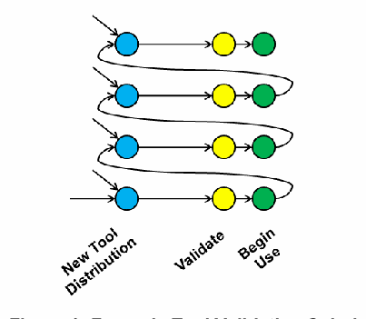
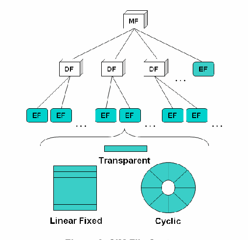
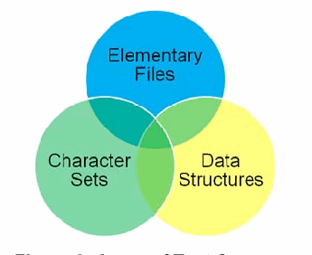
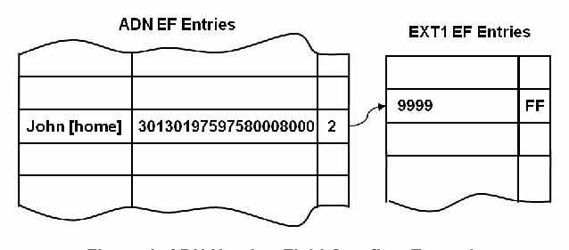
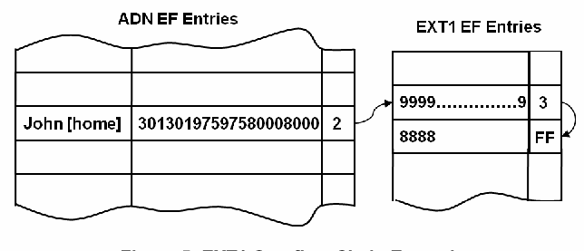
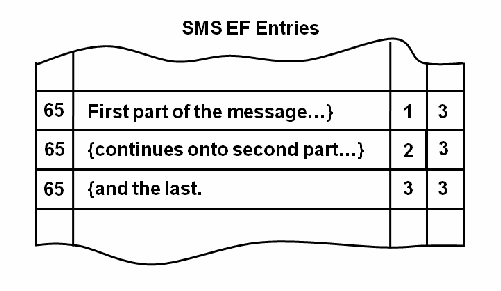
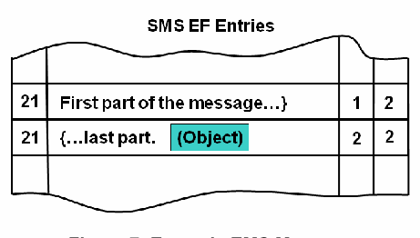
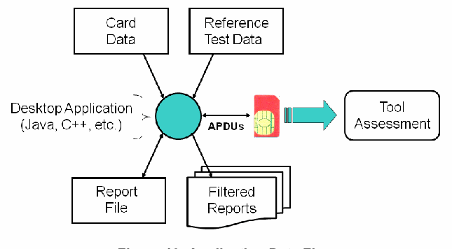
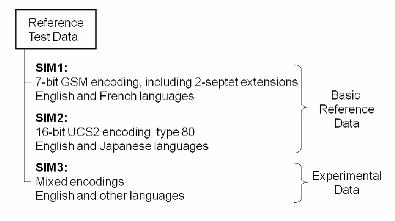
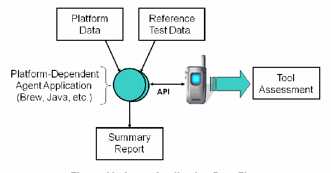

NIST IR 7617 日本語訳
英語タイトル : Mobile Forensic Reference Materials: a Methodology and Reification日本語タイトル : モバイルフォレンジック参照資料：方法論と具象化
公開日 : 2009-10-14
原文URL : https://csrc.nist.gov/pubs/ir/7617/final
翻訳編集 : 自動生成（有志による非公式の日本語訳）, 原文取得日 : 2026-10-31, 訳文 : 236 / 237 ブロック
[要約] NIST IR 7617 は、フォレンジックツールの検証における参照資料として使用するために、モバイルデバイスに参照テストデータを自動的に投入することに関する、理論上および実務上の問題を扱う報告書です。ID モジュールにデータを投入するために開発したアプリケーションとデータセットを説明し、その過程に含まれる微妙な点を明らかにします。投入したデータを復元するために一般的に使用されているフォレンジックツールの最近のバージョンを使用して得られた結果も論じており、結果は、参照資料を使えば現在のフォレンジックツールに存在するさまざまな不正確さを特定できることを示しているとされています。
［NIST のロゴ。公的な標章のため、この非公式サイトには掲載していません。原本 PDF を参照してください。］
NISTIR 7617
NISTIR 7617
Mobile Forensic Reference Materials: A Methodology and Reification
モバイルフォレンジック参照資料: 方法論と具象化
Wayne Jansen
Aurélien Delaitre
Wayne Jansen
Aurélien Delaitre
NISTIR 7617
NISTIR 7617
Mobile Forensic Reference Materials: A Methodology and Reification
Wayne Jansen
Aurélien Delaitre
モバイルフォレンジック参照資料: 方法論と具象化
Wayne Jansen
Aurélien Delaitre
COMPUTER SECURITY
コンピューターセキュリティ
Computer Security Division
Information Technology Laboratory
National Institute of Standards and Technology
Gaithersburg, MD 20899-8930
コンピューターセキュリティ部門
情報技術研究所
国立標準技術研究所
Gaithersburg, MD 20899-8930
October 2009
2009 年 10 月
U.S. Department of Commerce
Gary Locke, Secretary
米国商務省
Gary Locke 長官
National Institute of Standards and Technology
Patrick D. Gallagher, Deputy Director
国立標準技術研究所
Patrick D. Gallagher 副所長
Reports on Computer Systems Technology
コンピューターシステム技術に関する報告書
The Information Technology Laboratory (ITL) at the National Institute of Standards and Technology (NIST) promotes the U.S. economy and public welfare by providing technical leadership for the Nation’s measurement and standards infrastructure. ITL develops tests, test methods, reference data, proof of concept implementations, and technical analysis to advance the development and productive use of information technology. ITL’s responsibilities include the development of technical, physical, administrative, and management standards and guidelines for the cost-effective security and privacy of sensitive unclassified information in Federal computer systems. This Interagency Report discusses ITL’s research, guidance, and outreach efforts in computer security, and its collaborative activities with industry, government, and academic organizations.
国立標準技術研究所（NIST）の情報技術研究所（ITL）は、国の計測・標準インフラストラクチャに対して技術的なリーダーシップを提供することにより、米国経済と公共の福祉を促進しています。ITL は、情報技術の開発と生産的な利用を推進するため、テスト、テスト方法、参照データ、概念実証の実装、および技術分析を開発しています。ITL の責務には、連邦コンピューターシステムにおける機微な非機密情報のセキュリティとプライバシーを費用対効果よく確保するための、技術的、物理的、管理的、およびマネジメントの標準とガイドラインの開発が含まれます。この省庁間報告書は、コンピューターセキュリティにおける ITL の研究、ガイダンス、アウトリーチの取り組みと、産業界、政府、学術機関との共同活動について論じています。
National Institute of Standards and Technology Interagency Report
35 pages (2009)
国立標準技術研究所 省庁間報告書
35 ページ（2009 年）
Certain commercial entities, equipment, or materials may be identified in this document in order to describe an experimental procedure or concept adequately. Such identification is not intended to imply recommendation or endorsement by the National Institute of Standards and Technology, nor is it intended to imply that the entities, materials, or equipment are necessarily the best available for the purpose.
実験の手順や概念を適切に説明するため、本書では特定の商業団体、機器、または材料に言及している場合があります。こうした言及は、国立標準技術研究所による推奨または支持を意味するものではなく、また、それらの団体、材料、または機器が当該目的に最適であることを意味するものでもありません。
Abstract
要旨
This report concerns the theoretical and practical issues with automatically populating mobile devices with reference test data for use as reference materials in validation of forensic tools. It describes an application and data set developed to populate identity modules and highlights subtleties involved in the process. Intriguing results attained by recent versions of commonly-used forensic tools when used to recover the populated data are also discussed. The results indicate that reference materials can be used to identify a variety of inaccuracies that exist in present-day forensic tools.
本報告書は、フォレンジックツールの検証における参照資料として使用するため、モバイルデバイスに参照テストデータを自動的に投入することに関する、理論上および実務上の問題を扱います。ID モジュールにデータを投入するために開発したアプリケーションとデータセットを説明し、その過程に含まれる微妙な点を明らかにします。投入したデータを復元するために一般的に使用されているフォレンジックツールの最近のバージョンを使用して得られた、興味深い結果についても論じます。結果は、参照資料を使えば、現在のフォレンジックツールに存在するさまざまな不正確さを特定できることを示しています。
Keywords: Mobile Devices, Computer Forensics, Forensic Tool Validation
キーワード: モバイルデバイス、コンピューターフォレンジック、フォレンジックツールの検証
Table of Contents
目次
1. Introduction
1. はじめに
Forensic specialists today operate within what can be termed the forensic tool spiral, illustrated in Figure 1. New versions of forensic tools are issued regularly by a tool manufacturer to provide new features, broaden the range of existing functions, and correct identified problems. To ensure that a new or updated forensic tool is suitable for use by an organization, it must first be validated. After the organization completes validation of the tool successfully, it can safely be put into use for its intended purpose [SWG09].
今日のフォレンジックの専門家は、図 1 に示す、フォレンジックツールのスパイラルと呼べるものの中で活動しています。ツールの製造者は、新しい機能を提供し、既存の機能の範囲を広げ、特定された問題を修正するために、フォレンジックツールの新しいバージョンを定期的にリリースします。新しいフォレンジックツールや更新されたフォレンジックツールが組織で使用するのに適していることを確認するには、まず検証しなければなりません。組織がツールの検証を成功裏に完了すれば、そのツールを意図した目的のために安全に使用開始できます [SWG09]。

4段のらせん状の図です。各段は青の円から矢印で黄色の円、さらに緑の円へ進み、各段の終わりから線が折り返して次の段の始まりへつながります。下に列の名前があり、青が「New Tool Distribution」（新しいツールの配布）、黄色が「Validate」（検証）、緑が「Begin Use」（使用開始）です。
Figure 1: Forensic Tool Validation Spiral
図 1: フォレンジックツール検証スパイラル
Validation involves populating a sample device with representative test data and confirming successful recovery of the data [Goo03]. Populating a device is time consuming and prone to error, especially if done manually. The situation often creates an impasse —the improvements to the tool would benefit the work being performed, but no convenient time is immediately available to validate the tool. These circumstances could induce individuals to take a risk and use an updated tool without first validating it. The predicament could be alleviated greatly, if validation could be expedited, possibly by devising a means to populate mobile devices readily with reference test data, to create reference material for use in tool assessment. This report explores a general approach and specific implementation for creating reference material along the line suggested.
検証では、サンプルのデバイスに代表的なテストデータを投入し、そのデータが正常に復元されることを確認します [Goo03]。デバイスへのデータ投入は、特に手作業で行う場合、時間がかかり、エラーが起きやすい作業です。この状況は、しばしば行き詰まりを生みます。ツールの改良は現在行っている作業に役立ちますが、ツールを検証するための都合のよい時間がすぐには取れないのです。こうした状況から、検証をせずに更新されたツールを使うというリスクを冒す者が出る可能性があります。検証を迅速化できれば、この窮状は大幅に緩和できます。たとえば、モバイルデバイスに参照テストデータを手軽に投入する手段を考案して、ツールの評価に使う参照資料を作成する方法が考えられます。本報告書は、示唆したこの方向に沿って参照資料を作成するための、一般的なアプローチと具体的な実装を探ります。
2. Background
2. 背景
Reference material is commonly used in other scientific areas to control the quality of products. The term generally refers to a substance that is stable with respect to one or more specified properties and has been deemed suited for use in a measurement process [EPS01]. For example, if a device detects a contaminant within a liquid, it would be useful to have sample solutions with different concentrations of the contaminant to determine the accuracy of the device or to calibrate the device. A single reference material, however, should not be used both to calibrate and validate results in the same measurement procedure.
参照資料は、他の科学分野で、製品の品質を管理するために一般に用いられています。この用語は一般に、1 つ以上の指定された特性に関して安定しており、測定プロセスでの使用に適していると判断された物質を指します [EPS01]。たとえば、液体中の汚染物質を検出する装置がある場合、汚染物質の濃度が異なるサンプル溶液があれば、装置の精度を判断したり、装置を較正したりするのに役立ちます。ただし、同じ測定手順の中で、1 つの参照資料を較正と結果の検証の両方に使用すべきではありません。
Reference materials can be used for various purposes, including the following:
参照資料は、次のものを含むさまざまな目的で使用できます。
•To help develop accurate methods of analysis
•正確な分析方法の開発を助けるため
•To calibrate measurement systems used to institute quality control, determine performance characteristics, or measure a property at the state-of-the-art limit
•品質管理の確立、性能特性の判定、または最新技術の限界での特性の測定に用いる、測定システムを較正するため
•To assess measurement procedures and validate methods
•測定手順を評価し、方法を検証するため
•To use in proficiency tests
•技能試験で使用するため
•To ensure the adequacy and integrity of measurement quality assurance programs.
•測定の品質保証プログラムの妥当性と完全性を確保するため。
In general, the need for reference materials is vital in forensic analytical laboratories, where quality assurance is a major issue. It is the premise of the report that reference materials with the needed properties could be produced straightforwardly and used to validate mobile forensic tools, identifying inaccuracies that otherwise might go unnoticed.1
一般に、品質保証が主要な課題となるフォレンジック分析のラボラトリーでは、参照資料が極めて重要です。本報告書の前提は、必要な特性を備えた参照資料を容易に作成でき、それを用いてモバイルフォレンジックツールを検証することで、そうでなければ見過ごされかねない不正確さを特定できるということです。1
3. Forensic Reference Material
3. フォレンジック参照資料
For cell phones, the most common type of mobile device, three components are of interest: the handset, the identity module, and the removable memory card. The memory of the handset typically contains the widest range of data, since it is involved with both the cellular interface and the data processing capabilities. Moreover, the structure of the data it contains may be dictated to some extent by the capabilities of the handset. The identity module is more limited in the range of data it contains, although still quite extensive, and related to the cellular interface in part. The structure of the data is also standardized to a high degree. Removable memory cards, while having the broadest range of data, are less of a problem, since they can be treated using traditional forensic procedures similar to those used with disk drives. Therefore, they are not discussed further in this report.
最も一般的な種類のモバイルデバイスである携帯電話では、ハンドセット、ID モジュール、リムーバブルメモリカードの 3 つの構成要素が関心の対象になります。ハンドセットのメモリは、携帯通信のインターフェースとデータ処理能力の両方に関わるため、通常は最も広い範囲のデータを含みます。さらに、そこに含まれるデータの構造は、ハンドセットの能力によってある程度決まる場合があります。ID モジュールが含むデータの範囲は、それよりも限られますが、それでもかなり広範であり、一部は携帯通信のインターフェースに関連します。データの構造も、高度に標準化されています。リムーバブルメモリカードは、データの範囲は最も広いものの、ディスクドライブで使用されるものと同様の従来のフォレンジック手順で扱えるため、問題はより小さくなります。したがって、本報告書ではこれ以上取り上げません。
Empirical assessment of algorithms used by forensic tools to recover evidence is predicated on using reference materials (i.e., exemplar devices containing known data). Populating a device with a representative set of data to create reference material can be done in various ways:
フォレンジックツールが証拠を復元するために使用するアルゴリズムの経験的な評価は、参照資料（すなわち、既知のデータを含む見本のデバイス）の使用を前提としています。参照資料を作成するために、デバイスに代表的なデータの集合を投入する方法は、さまざまです。
•Manually – Using manual means to populate a group of individual items onto a device is typically a time-consuming and error-prone process. Because of that, the test coverage may be restricted to the most essential items to expedite the process.
•手動 – 手作業でデバイスに個々の項目の集まりを投入するのは、通常、時間がかかり、エラーが起きやすいプロセスです。そのため、プロセスを迅速化するために、テストの網羅範囲が最も重要な項目に限られる場合があります。
•Semi-automated – Using a semi-automated process typically preserves manually populated data for reuse. For example, an image from a manually populated handset may be captured and later flashed onto the same handset or model of handset to recreate the reference test material.
•半自動 – 半自動のプロセスでは、通常、手作業で投入したデータを再利用できるよう保存します。たとえば、手作業でデータを投入したハンドセットのイメージを取得し、後で同じハンドセットまたは同じ機種のハンドセットに書き込んで、参照テスト資料を再現することができます。
•Automated – Using an automated means to populate devices can greatly expedite validation, once the initial effort to construct the test data is completed. For example, a smart card scripting tool can be used to create a script that populates identity modules.
•自動 – デバイスにデータを投入する自動化された手段を使えば、テストデータを構築する最初の作業が完了した後は、検証を大幅に迅速化できます。たとえば、スマートカードのスクリプトツールを使って、ID モジュールにデータを投入するスクリプトを作成できます。
Different types of devices generally require different techniques to populate data. Different techniques can require deeper levels of skill and knowledge and produce varying levels of coverage. In particular, as mentioned above, manual techniques can limit the range of coverage of possible data types. For example, populating an identity module manually might involve resetting the default language of a handset to enable foreign language characters to be populated. Navigation among menu entries needed to create different types of data can be difficult and slow, if the user is not very familiar with the language in question. Ideally, one would like a technique that is automated, simple to use, and comprehensive in coverage.
デバイスの種類が異なれば、一般にデータを投入する技法も異なります。技法によっては、より高度な技能や知識が必要となり、網羅範囲も異なります。特に、上述のとおり、手作業の技法では、扱えるデータ型の範囲が限られる場合があります。たとえば、アイデンティティモジュールに手作業でデータを投入するには、外国語の文字を投入できるよう、ハンドセットの既定の言語を変更しなければならない場合があります。さまざまな種類のデータを作成するのに必要なメニュー項目間の移動は、対象言語にあまり慣れていないユーザーには難しく、時間がかかる場合があります。理想的には、自動化され、使いやすく、網羅範囲の包括的な技法が求められます。
4. Identity Modules
4. ID モジュール
Identity modules are trusted hardware designed to store and process data and to act as security tokens for gaining access to cellular services. Identity modules are highly standardized, have a straightforward communications interface, and are prevalent in a wide range of cell phones. Forensic tools to recover data from identity modules were also the earliest form of forensic tool for cell phones, and from a maturity perspective should be highly reliable and accurate. In addition, nearly all mobile forensic tools, almost without exception, deal with identity modules either exclusively or as one component of an integrated toolkit. Finally, test data established for identity modules typically apply as well to the handset. Therefore, identity modules present a good starting point for investigating the benefits and drawbacks in creating reference materials for mobile forensics.
ID モジュールは、データを保存・処理し、携帯通信サービスにアクセスするためのセキュリティトークンとして機能するよう設計された、信頼できるハードウェアです。ID モジュールは高度に標準化され、単純な通信インターフェースを持ち、幅広い携帯電話に普及しています。ID モジュールからデータを復元するフォレンジックツールは、携帯電話向けのフォレンジックツールとして最も初期の形態でもあり、成熟度の観点から、高い信頼性と正確性を備えているはずです。加えて、ほぼすべてのモバイルフォレンジックツールは、例外はほとんどなく、ID モジュールだけを扱うか、統合ツールキットの構成要素の1つとして扱います。最後に、ID モジュール向けに確立されたテストデータは、通常、ハンドセットにも適用できます。したがって、ID モジュールは、モバイルフォレンジック向け参照資料の作成における利点と欠点を調査する出発点として適しています。
The most common identity modules are Subscriber Identity Modules (SIMs) for second generation (2G) GSM phones. Backwards-compatible 2G/3G UMTS SIMs (USIMs) are also supported by the prevailing standards and quite common today [3GPP09c]. Other types of identity modules also exist, including those for iDEN phones and Removable User Identity Modules (R-UIMs) for CDMA phones. The early identity module standards developed for SIMs established the paradigm for content and functionality seen in other identity modules that followed. Moreover, data stores for a SIM also cover a major subset of the data stores of a 3G USIM [3GPP09c]. Hence, they serve well to illustrate the overall principles and nuances involved with populating test data onto identity modules.
最も一般的な ID モジュールは、第 2 世代（2G）の GSM 電話向けの加入者識別モジュール（SIM）です。後方互換性のある 2G/3G UMTS の SIM（USIM）も、主要な標準でサポートされており、今日では非常に一般的です [3GPP09c]。iDEN 電話向けのものや、CDMA 電話向けのリムーバブルユーザー識別モジュール（R-UIM）など、他の種類の ID モジュールもあります。SIM 向けに策定された初期の ID モジュール標準は、後に続く他の ID モジュールに見られる内容と機能のパラダイムを確立しました。さらに、SIM のデータストアは、3G USIM のデータストアの主要な部分集合もカバーしています [3GPP09c]。したがって、SIM は、ID モジュールにテストデータを投入する際の全体的な原則と微妙な点を説明するのに適しています。
4.1 File System Organization
4.1 ファイルシステムの構成
SIMs are specialized smart cards that contain a processor and memory. A file system resides in persistent memory and is hierarchically structured. Three main components are the Master File (MF) or root of the file system, Dedicated Files (DF) that serve as directories, and Elementary Files (EF) that hold data content. Elementary Files can retain data in several forms: as a sequence of bytes that form a record (transparent), a one-dimensional array of records (linear fixed), and a last-in first-out queue of records (cyclic). Figure 2 illustrates the file system hierarchy and forms of EF content.
SIM は、プロセッサとメモリを備えた専用のスマートカードです。ファイルシステムは永続メモリ上にあり、階層構造になっています。主要な構成要素は3つあり、ファイルシステムのルートであるマスターファイル（MF）、ディレクトリとして機能する専用ファイル（DF）、およびデータを保持する基本ファイル（EF）です。基本ファイルは、レコードを構成するバイト列（透過型）、レコードの1次元配列（固定長リニア型）、およびレコードの後入れ先出しキュー（循環型）という複数の形式でデータを保持できます。図2は、ファイルシステムの階層とEF内容の形式を示しています。

SIM のファイルシステムの木構造の図です。根の「MF」から3つの「DF」と1つの「EF」に枝分かれし（「…」で続きを示す）、各 DF からそれぞれ2つの「EF」に分かれ、その後に「…」が続きます。EF の下の波括弧で、EF の内容の3つの形をまとめています。「Transparent」（1本の帯）、「Linear Fixed」（レコードを積み重ねた形）、「Cyclic」（区切られた円環）です。
Figure 2: SIM File System
図 2: SIM のファイルシステム
4.2 Data Coverage
4.2 データの網羅範囲
While the organization of the file stores is simple, many subtleties exist that affect the range of coverage of test data. They include the extent and idiosyncrasies of character set encodings that are available, and the data structures and relationships that can be exhibited. Gaining write access to the various EFs on a SIM that typically contain data of interest to an examiner is also a related issue affecting test data coverage. These three main areas affecting test coverage are shown in Figure 3.
ファイルストアの構成は単純ですが、テストデータの網羅範囲に影響する微妙な点が数多くあります。それらには、利用できる文字セットエンコーディングの範囲と癖、および表現できるデータ構造と関係が含まれます。検査官が関心を持つデータを通常含む、SIM 上のさまざまな EF への書き込みアクセスを得ることも、テストデータの網羅範囲に影響する関連する問題です。テストの網羅範囲に影響するこれら 3 つの主要な領域を、図 3 に示します。

3つの円が重なり合うベン図です。円の名前は上が「Elementary Files」（エレメンタリーファイル）、左下が「Character Sets」（文字セット）、右下が「Data Structures」（データ構造）です。
Figure 3: Areas of Test Coverage
図 3: テスト網羅範囲の領域
Previous work carried out in the assessment of forensic SIM tools identified a variety of shortcomings [Aye05, Aye07, Jan06]. Many of those shortcomings suggest that the tools were vetted by the manufacturers for only a narrow range of commonly encountered data and would benefit from more broadened test coverage.
フォレンジックSIMツールの評価について過去に行われた研究では、さまざまな欠点が特定されています [Aye05, Aye07, Jan06]。それらの欠点の多くは、ツールが製造者によって、一般によく遭遇する狭い範囲のデータについてしか審査されておらず、テストの網羅範囲をさらに広げることで改善できることを示唆しています。
5. Character Sets
5. 文字セット
A surprisingly wide range of character sets and encodings exist for populating EFs. In many ways, the encodings used with SIMs and other identity modules hark back to the early days of computing when memory was at a premium and every bit was put to full use. In some cases, the data structures can be quite convoluted, such as in the following example where two integer values are defined, one a 12-bit unsigned integer and the other a 4-bit signed integer [3GPP07]: “Byte 4 and bits b1 to b4 of byte 5 represent the Elementary Price per Unit (EPPU) in the currency coded by bytes 1-3. Bits b5 to b8 of byte 5 are the decimal logarithm of the multiplicative factor represented by the absolute value of its decimal logarithm (EX) and the sign of EX, which is coded 0 for a positive sign and 1 for a negative sign.”
EF にデータを投入するための文字セットとエンコーディングは、驚くほど多様です。SIM やその他の ID モジュールで使われるエンコーディングは、多くの点で、メモリが貴重で、あらゆるビットを最大限に活用していたコンピューティング初期の時代を思い起こさせます。たとえば、次の例のように、データ構造がかなり複雑な場合があります。この例では、2つの整数値が定義されており、1つは12ビット符号なし整数、もう1つは4ビット符号付き整数です [3GPP07]。「バイト4とバイト5のビットb1〜b4は、バイト1〜3でコード化された通貨での単位あたり基本価格（Elementary Price per Unit、EPPU）を表します。バイト5のビットb5〜b8は乗数因子の10進対数であり、その10進対数の絶対値（EX）とEXの符号によって表されます。EXの符号は、正の場合は0、負の場合は1としてコード化されます。」
Besides variable-length, signed and unsigned integers expressed in binary, numbers can be expressed in Binary Coded Decimal (BCD) [3GPP07]. BCD encodes each decimal digit that makes up a number into 4-bit nibbles, which allows faster conversion for display and entry than does a binary representation of the complete number. Single and short multi-bit fields are also common, used for flag settings, enumerated types, and low-valued integers. The most variation exists in the expression of characters used in message content and in so-called alpha identifiers. Three general types of character encodings are supported: 7-bit GSM, 8-bit representations, and 16-bit UCS2. Each encoding scheme has interesting aspects to it, discussed below.
2 進数で表現される可変長の符号付き整数および符号なし整数のほかに、数値は 2 進化 10 進数（BCD）で表現できます [3GPP07]。BCD は、数値を構成する各 10 進数字を 4 ビットのニブルにエンコードするため、数値全体を 2 進数で表現する場合よりも、表示や入力のための変換が高速になります。単一の、または短い複数ビットのフィールドも一般的で、フラグの設定、列挙型、小さな値の整数に使われます。最も多様なのは、メッセージの内容や、いわゆるアルファ識別子で使われる文字の表現です。文字エンコーディングとして、7 ビット GSM、8 ビット表現、16 ビット UCS2 の 3 種類がサポートされています。各エンコーディング方式には興味深い点があり、以下で論じます。
Ideally, the full range of values for elementary file content would be represented in the reference test data. However, because the available memory is very limited, expressing a full range of possibilities on a single identity module is not practicable. Instead, concentrating on more commonly used encodings and exploring the variability possible within those encodings can be accomplished more readily. Multiple identity modules can also be populated with portions of the reference test data to expand coverage.
理想的には、基本ファイルの内容の値の全範囲が、参照テストデータで表現されます。しかし、利用できるメモリは非常に限られているため、1 つの ID モジュールで可能性の全範囲を表現することは現実的ではありません。そのかわり、より一般的に使われるエンコーディングに集中し、それらのエンコーディングの中で可能なばらつきを調べるほうが、容易に達成できます。参照テストデータの一部を複数の ID モジュールに分けて投入し、網羅範囲を広げることもできます。
5.1 GSM 7-bit Character Set
5.1 GSM 7 ビット文字セット
The GSM standards define a basic, 128-character, default character set that uses a 7-bit encoding [3GPP08]. Support for the 7-bit GSM character set is mandatory. The character set includes the upper and lowercase 26-character English alphabet, the Arabic numerals 0 through 9, numerous special characters, and other characters used in Latin and non-Latin languages. 7-bit characters are normally packed into 8-bit bytes to utilize bits that would other go unused. For example, a 140-byte message when packed affords 160 characters of text.
GSM 標準は、7 ビットのエンコーディングを使用する、128 文字の基本的な既定の文字セットを定義しています [3GPP08]。GSM 7 ビット文字セットのサポートは必須です。この文字セットには、26 文字の英語アルファベットの大文字と小文字、アラビア数字の 0 から 9、多数の特殊文字、およびラテン語系言語と非ラテン語系言語で使われるその他の文字が含まれます。7 ビット文字は、通常、ほかの用途では使用されないビットを利用するために、8 ビットのバイトに詰め込まれます。たとえば、140 バイトのメッセージは、詰め込むと 160 文字のテキストを収められます。
The GSM standards also specify an extension mechanism for defining additional characters [3GPP08]. A sparsely-populated extension table for symbols of international significance, such as the Euro currency symbol, is included in the standards. To encode a character in the extension table, two septets are required: the first for the escape character in the basic alphabet, the second for the character in the extension table. Besides the Euro symbol, the following special characters (in quotes) are currently defined: “^” “{” “}” “\” “[” “~” “]” “|”. If a code for an extension table entry is encountered for which no symbol has been specified, then the corresponding character in the basic GSM 7-bit alphabet should be used.
GSM 標準は、追加の文字を定義するための拡張の仕組みも規定しています [3GPP08]。ユーロ通貨記号のような、国際的な意味を持つ記号のための、疎に埋められた拡張テーブルが標準に含まれています。拡張テーブルの文字をエンコードするには、2 つのセプテットが必要です。1 つ目は基本アルファベットのエスケープ文字、2 つ目は拡張テーブルの文字です。ユーロ記号のほかに、現在、次の特殊文字（引用符内）が定義されています。「^」「{」「}」「\」「[」「~」「]」「|」。記号が指定されていない拡張テーブルのエントリのコードに遭遇した場合は、基本 GSM 7 ビットアルファベットの対応する文字を使うべきです。
5.2 UCS2 16-bit Character Set
5.2 UCS2 16 ビット文字セット
GSM standards support the 16-bit UCS2 character set standardized by ISO/IEC to allow use of an extensive range of national-specific character sets beyond that of 7-bit GSM [3GPP07]. Three different forms of encoding are defined. The first octet of each encoding indicates the type of encoding: 81, 82, or 83. Type 81 encodings are straight forward, consisting of a sequence of 16-bit UCS2 character codes. Type 82 and 83 encodings are a bit more complicated.
GSM 標準は、7 ビット GSM を超える、幅広い国別の文字セットを使用できるようにするため、ISO/IEC が標準化した 16 ビットの UCS2 文字セットをサポートしています [3GPP07]。エンコーディングの形式は 3 種類定義されています。各エンコーディングの最初のオクテットは、エンコーディングの種類（81、82、または 83）を示します。種類 81 のエンコーディングは単純で、16 ビットの UCS2 文字コードの列で構成されます。種類 82 と 83 のエンコーディングは、もう少し複雑です。
The second octet of a type 82 encoding indicates the number of characters in the string, while the third octet contains an 8-bit number that defines the most significant portion or prefix of a 16-bit base pointer to a character table in the UCS2 code space. The remaining 8-bit codes are used as a suffix to identify a specific UCS2 character or, somewhat surprisingly, a 7-bit GSM character, depending on the setting of the most significant bit (i.e., 0 for GSM, 1 for UCS2 suffix). The second octet of a type 83 encoding indicates the length of the string as before. The third and fourth octets define an entire 16-bit base pointer to a character table. The remaining 8-bit codes are used as an offset from the base pointer to identify a specific UCS2 character or, as above, a 7-bit GSM character.
種類 82 のエンコーディングの 2 番目のオクテットは、文字列の文字数を示し、3 番目のオクテットは、UCS2 コード空間にある文字テーブルへの 16 ビットのベースポインタの、最上位部分すなわちプレフィックスを定義する 8 ビットの数値を含みます。残りの 8 ビットのコードは、最上位ビットの設定（すなわち、GSM なら 0、UCS2 のサフィックスなら 1）に応じて、特定の UCS2 文字、または、やや意外ですが 7 ビット GSM 文字を識別するサフィックスとして使われます。種類 83 のエンコーディングの 2 番目のオクテットは、先ほどと同様に文字列の長さを示します。3 番目と 4 番目のオクテットは、文字テーブルへの 16 ビットのベースポインタ全体を定義します。残りの 8 ビットのコードは、ベースポインタからのオフセットとして使われ、特定の UCS2 文字、または上記と同様に 7 ビット GSM 文字を識別します。
5.3 8-bit Character Sets
5.3 8 ビット文字セット
8-bit data can occur in both alpha identifiers and message content. When used in alpha identifiers, such as names in address book entries, the 7-bit GSM encoding is typically used with the additional most significant 8th bit set to zero. When used in message content, it implies that a user-defined coding applies.
8ビットデータは、アルファ識別子とメッセージ内容の両方に現れる場合があります。アドレス帳のエントリにある名前などのアルファ識別子で使われる場合、通常は7ビットGSMエンコーディングを使用し、追加の最上位第8ビットを0に設定します。メッセージ内容で使われる場合は、ユーザー定義のコーディングが適用されていることを示します。
6. Data Structures
6. データ構造
Basic relationships can exist between records in different EFs or within the same EF. A simple example is the relationship between the IMSI and AD EFs. A field in AD conveys the length of MNC in the IMSI, which is needed to interpret the IMSI correctly. More involved relationships also exist, as discussed below.
異なる EF のレコードの間や、同じ EF 内のレコードの間には、基本的な関係が存在する場合があります。簡単な例は、IMSI EF と AD EF の関係です。AD のフィールドは、IMSI を正しく解釈するために必要な、IMSI 内の MNC の長さを伝えます。より複雑な関係も、以下で論じるように存在します。
6.1 Linked Extensions
6.1 リンクされた拡張
Various extension EFs in the file system are used to contain overflow information from entries in other EFs and provide a good example of a common data structure. Several EFs are defined for this purpose: EXT1, EXT2, EXT3, and EXT4. For instance, if the number field of an ADN EF entry exceeds 20 digits, the remaining digits can be stored in an EXT1 EF entry, as illustrated in Figure 4 for a 24-digit number with an alpha identifier of “John [home].” A field in the ADN entry contains the index of the EXT1 entry that contains the remaining digits, which in this case is the 2nd entry. That is, the index serves as a physical link to where the overflow information is stored.
ファイルシステム内のさまざまな拡張 EF は、他の EF のエントリからあふれた情報を収めるために使用され、一般的なデータ構造のよい例になります。この目的のために、EXT1、EXT2、EXT3、EXT4 の複数の EF が定義されています。たとえば、ADN EF のエントリの番号フィールドが 20 桁を超える場合、残りの桁を EXT1 EF のエントリに格納できます。図 4 に、アルファ識別子が「John [home]」の 24 桁の番号の場合を示します。ADN エントリのフィールドには、残りの桁を含む EXT1 エントリのインデックスが入っており、この場合は 2nd エントリです。つまり、インデックスは、あふれた情報の格納場所への物理的なリンクとして機能します。

2つのレコード表が横に並んだ図です。左の「ADN EF Entries」（ADN EF のエントリ）の1レコードに、英字識別子「John [home]」、番号「30130197597580008000」、索引「2」が入っています。索引から曲がった矢印が右の表「EXT1 EF Entries」（EXT1 EF のエントリ）の2番目のレコードを指し、そのレコードには「9999」と値「FF」が入っています。
Figure 4: ADN Number Field Overflow Example
図 4: ADN の番号フィールドのあふれの例
Note that longer numbers can also be accommodated. For example, if the second EXT1 entry were insufficient, another available EXT1 entry, say the third entry, could hold the overflow digits and be linked forward from the second EXT1 entry via an index value (i.e., 3), as shown in Figure 5. The index value FF in the third entry indicates that no further links apply. The procedure essentially forms a linked list or chain of EXT1 entries to hold overflow data.
より長い番号にも対応できることに注意してください。たとえば、2 番目の EXT1 エントリでは足りない場合、利用可能な別の EXT1 エントリ、たとえば 3 番目のエントリが、あふれた桁を保持でき、図 5 に示すように、2 番目の EXT1 エントリからインデックス値（すなわち 3）によって前方にリンクできます。3 番目のエントリのインデックス値 FF は、これ以上リンクがないことを示します。この手順は、あふれたデータを保持するために、EXT1 エントリの連結リスト、すなわちチェーンを本質的に形成します。

図4と同じ配置の図です。ADN のレコード（「John [home]」「30130197597580008000」、索引「2」）が「EXT1 EF Entries」の2番目のレコードを指し、そこには「9999..............9」とリンク値「3」が入っています。「3」から曲がった矢印が3番目のレコードを指し、そこには「8888」と終端の値「FF」が入っています。
Figure 5: EXT1 Overflow Chain Example
図 5: EXT1 のあふれのチェーンの例
Interestingly, it is possible to encode the EXT1 entries to form a circular list. That is, the FF terminating value could be changed to point to the entry in which it resides or to an entry that links back to it. While this would be considered an abnormal setting, it would be possible for someone to program such a change to poison the content, as an anti-forensic technique to affect processing by a forensic SIM tool.
興味深いことに、EXT1 エントリをエンコードして循環リストを形成することが可能です。つまり、終端値 FF を、その値が置かれているエントリ自身、またはそこへ戻ってリンクするエントリを指すように変更できます。これは異常な設定と見なされますが、誰かが、フォレンジック SIM ツールによる処理に影響を与えるアンチフォレンジックの手法として、内容を汚染するためにそのような変更をプログラムすることも可能です。
6.2 Message Segments
6.2 メッセージセグメント
Text messages are exchanged between subscribers via one or more short message segments. Each entry in the SMS EF holds one message segment. The maximum allowable length of textual content per segment is 140 bytes per message. Longer messages are split into multiple message segments that can be reassembled [3GPP09a]. Zero length messages that contain no user data and only message header data are also possible.
テキストメッセージは、1 つ以上の短いメッセージセグメントを介して加入者間でやり取りされます。SMS EF の各エントリは、1 つのメッセージセグメントを保持します。セグメントあたりのテキスト内容の最大許容長は、メッセージあたり 140 バイトです。それより長いメッセージは、再構成できる複数のメッセージセグメントに分割されます [3GPP09a]。ユーザーデータを含まず、メッセージヘッダーのデータだけを含む、長さゼロのメッセージも可能です。
A message segment has numerous fields that relate to the message type. A message reference field conveys a reference number assigned to the message when submitted by a mobile device. The originating and destination addresses, service center time stamp, and user data length are other important fields, besides the actual user data content. Various flags are also conveyed that indicate the disposition of a message (e.g., whether it is incoming or outgoing, and respectively read or sent).
メッセージセグメントには、メッセージの種類に関連する多数のフィールドがあります。メッセージ参照フィールドは、モバイルデバイスがメッセージを送信するときに割り当てられる参照番号を伝えます。実際のユーザーデータの内容のほかに、送信元アドレスと宛先アドレス、サービスセンターのタイムスタンプ、ユーザーデータ長も重要なフィールドです。メッセージの状態を示す各種のフラグも伝えられます（たとえば、受信か送信か、また、それぞれ既読か送信済みか）。
Segments that make up a concatenated message are linked to each other logically through reference numbers. Every message segment that makes up the concatenated message has the same message reference number. Two other message number fields are used to assemble and control those segments: the segment index and the segment count. The segment index indicates the sequence number of a particular short message within the concatenated message. The value starts at 1 and increases by 1, up to a maximum of 255, for each message segment sent. The segment count indicates the total number of short messages that make up the concatenated message and ranges from 0 to 255. Figure 6 illustrates these messages number fields used in a 3-segment concatenated message whose reference number is 65 and individual segment index/segment count numbers are respectively 1/3, 2/3, and 3/3. Note that the braces in the message body are a convention used in the reference data to provide a visual cue that other segments may follow or precede a given segment.
連結メッセージを構成するセグメントは、参照番号を通じて論理的に互いにリンクされています。連結メッセージを構成するすべてのメッセージセグメントは、同じメッセージ参照番号を持ちます。それらのセグメントを組み立てて制御するために、さらに 2 つのメッセージ番号フィールド、セグメントインデックスとセグメント数が使われます。セグメントインデックスは、連結メッセージ内での特定のショートメッセージの順序番号を示します。値は 1 から始まり、メッセージセグメントを送信するごとに 1 ずつ増加し、最大 255 までです。セグメント数は、連結メッセージを構成するショートメッセージの総数を示し、0 から 255 の範囲です。図 6 は、参照番号が 65 で、個々のセグメントのインデックス／セグメント数が、それぞれ 1/3、2/3、3/3 である 3 セグメントの連結メッセージで使われる、これらのメッセージ番号フィールドを示しています。メッセージ本文の中の波括弧は、参照データで使われている慣例で、あるセグメントの前後に他のセグメントが続く可能性があることを視覚的に示すものです。

「SMS EF Entries」（SMS EF のエントリ）という表題のレコード表で、3つのレコードが埋まっています。各レコードは参照番号「65」、メッセージ本文、セグメント番号、セグメント数からなり、「First part of the message...}」1 3、「{continues onto second part...}」2 3、「{and the last.」3 3 です。
Figure 6: Concatenated Message Example
図 6: 連結メッセージの例
Message segments that make up a concatenated message are not necessarily stored in consecutive slots of the SMS EF, in contrast to Figure 6. Over time, message deletions tend to fragment the available slots in the EF, somewhat similar to disk fragmentation. It is also possible to have situations where some message segments of a concatenated message are not present. For example, once a message is read and deleted, some segments may be reused and the contents overwritten, while other segments remain and their contents are able to be recovered.
連結メッセージを構成するメッセージセグメントは、図 6 とは対照的に、SMS EF の連続したスロットに保存されているとは限りません。時間が経つと、メッセージの削除によって EF の利用可能なスロットが断片化する傾向があり、これはディスクの断片化にいくらか似ています。連結メッセージの一部のメッセージセグメントが存在しない状況もあり得ます。たとえば、メッセージが読まれて削除された後、一部のセグメントが再利用されて内容が上書きされる一方で、他のセグメントは残り、その内容を復元できる場合があります。
SMS message content can be extended through the Enhanced Messaging Service (EMS) to allow simple multimedia messages to be conveyed. Segments of an EMS message reside in the SMS EF. EMS messages are essentially an application-level content extension to SMS, which conform to the general SMS message structure and support for concatenated messages. The second segment in Figure 7 illustrates an EMS object conveyed as part of a two-segment concatenated message.
SMS のメッセージ内容は、拡張メッセージングサービス（EMS）によって拡張でき、単純なマルチメディアメッセージを伝えることができます。EMS メッセージのセグメントは、SMS EF に置かれます。EMS メッセージは、本質的に SMS のアプリケーションレベルの内容拡張であり、一般的な SMS のメッセージ構造と連結メッセージのサポートに準拠しています。図 7 の 2 番目のセグメントは、2 セグメントの連結メッセージの一部として伝えられる EMS オブジェクトを示しています。

「SMS EF Entries」という表題のレコード表で、参照番号「21」の2つのレコードが埋まっています。1つ目は「First part of the message...}」でセグメント 1/2、2つ目は「{...last part.」の後に色付きの枠「(Object)」が続き、セグメント 2/2 です。
Figure 7: Example EMS Message
図 7: EMS メッセージの例
EMS messages can contain not only formatted text with different font styles and fonts, but also simple animations, black and white bitmap pictures, monophonic melodies, and vCard and vCalendar objects [3GPP09a]. Several EMS objects may be mixed together in one message and are encoded in the user data portion of a message as information elements within the user data header. The presence of EMS objects significantly increases the complexity of message content and, because of the additional content encoding, EMS messages usually require more than a single message segment.
EMS メッセージには、異なるフォントスタイルやフォントを使った書式付きテキストだけでなく、単純なアニメーション、白黒のビットマップ画像、単音のメロディ、vCard や vCalendar のオブジェクトも含められます [3GPP09a]。複数の EMS オブジェクトを 1 つのメッセージに混在させることができ、それらは、メッセージのユーザーデータ部分に、ユーザーデータヘッダー内の情報要素としてエンコードされます。EMS オブジェクトがあると、メッセージ内容の複雑さが大幅に増し、追加の内容のエンコーディングのために、EMS メッセージは通常、複数のメッセージセグメントを必要とします。
7. Elementary Files
7. 基本ファイル
An assortment of digital evidence from a SIM lies scattered throughout various EFs in the file system. For a reference SIM to be useful, its file system must be populated with test data that is normally recovered by such tools and of interest to examiners. Several general categories of data apply:
SIM から得られるさまざまなデジタル証拠が、ファイルシステム内のさまざまな EF に散らばっています。参照用の SIM が役に立つためには、そのファイルシステムに、そうしたツールが通常復元し、検査官が関心を持つテストデータを投入しなければなりません。いくつかの一般的なデータの区分が当てはまります。
•Service-related Information
•サービス関連情報
•Phonebook and Call Information
•電話帳と通話情報
•Messaging Information
•メッセージ情報
•Location Information.
•位置情報。
Table 1 lists a number of EFs from each of these categories that contain data regularly employed by forensic examiners and useful as core items for validation [Dea05, Wil03].
表 1 は、これらの各区分から、フォレンジックの検査官が日常的に用いるデータを含み、検証の中核項目として有用な EF をいくつか挙げています [Dea05, Wil03]。
Table 1: Core Forensic SIM Data
表 1: フォレンジック SIM の中核データ
| Category | EF | Description |
|---|---|---|
| Service-related Information | ICCID | The Integrated Circuit Card Identifier (ICCID) is a unique numeric identifier for the SIM that can be up to 20 digits long. It consists of an identifier prefix (89 for telecommunications), followed by a country code, an issuer identifier number, and an individual account identification number [ITU06]. Aside from the prefix, the components of an ICCID are variable. |
| IMSI | The International Mobile Subscriber Identity (IMSI) is a unique 15-digit numeric identifier assigned to the subscriber. Its structure is somewhat similar to the ICCID: a Mobile Country Code (MCC), a Mobile Network Code (MNC), and a Mobile Subscriber Identity Number (MSIN). The MCC is 3 digits, the MNC may be either 2 or 3 digits, and the MSIN assigned by the carrier takes up the remainder. The fourth byte of another EF, Administrative Data (AD), gives the length of the MNC [3GPP09b]. | |
| MSISDN | The Mobile Station International Subscriber Directory Number (MSISDN) is intended to convey the telephone number assigned to the subscriber for receiving calls on the phone, but is updatable by the subscriber. Unlike the ICCID and IMSI, however, the MSISDN is an optional EF. | |
| SPN | The Service Provider Name (SPN) is an optional EF that contains the name of the service provider. If present, it can be updated only by the administrator (i.e., Administrator access). | |
| SDN | The Service Dialling Numbers (SDN) is an optional EF that contains numbers for special services such as customer care. | |
| EXT3 | The Extension3 (EXT3) EF contains additional data for SDN entries. | |
| Phonebook and Call Information | ADN | The Abbreviated Dialling Numbers (ADN) EF retains a list of names and phone numbers entered by the subscriber. The type of number (TON) and numbering plan identification (NPI) are also maintained in this EF. It also holds an index to an EXT1 EF record for overflow data (i.e., an unusually long sequence of digits). |
| LND | The Last Numbers Dialled (LND) EF contains a list of the most recent phone numbers called by the device. A name may also be associated with an entry (e.g., a called phonebook entry) and stored with the number. It also holds an index to an EXT1 EF record for overflow data. | |
| EXT1 | The Extension1 (EXT1) EF record is used to maintain overflow digits for ADN, LND, and other EF entries. | |
| FDN | The Fixed Dialling Numbers (FDN) EF is similar to ADN insofar as a list of names and phone numbers is involved, but restricts dialing to just the numbers prescribed by a card manager. If the FDN storage capacity cannot hold all of the information for an entry, an index to an Extension2 (EXT2) EF record is used to indicate where the additional data is maintained. | |
| EXT2 | The Extension2 (EXT2) EF record is used to maintain overflow digits for FDN and other EF entries. | |
| Messaging Information | SMS | The Short Message Service (SMS) EF contains text and associated parameters for messages received from or sent to the network, or are to be sent out as an MS-originated message. SMS entries contain text and header information such as the time an incoming message was sent as recorded by the mobile phone network, the sender's phone number, the SMS Center address, and the status of the entry. The status of an entry can be designated as unoccupied free space or as occupied by one of the following: a received message to be read, a received message that has been read, an outgoing message to be sent, or an outgoing message that has been sent. Deleted messages are usually flagged as free space and the content left unchanged on the SIM until overwritten. |
| Location Information | LOCI | The Location Information (LOCI) EF contains the Location Area Information (LAI) for voice communications. The LAI is composed of the MCC and MNC of the location area and the Location Area Code (LAC), an identifier for a collection of cells [3GPP09b]. |
| LOCIGPRS | The GPRS Location Information (LOCIGPRS) EF contains the Routing Area Information (RAI) for data communications over the General Packet Radio Service (GPRS). The RAI is composed of the MCC and MNC of the routing area and the LAC, as well as a Routing Area Code (RAC), an identifier of the routing area within the LAC. |
| 区分 | EF | 説明 |
|---|---|---|
| サービス関連情報 | ICCID | 集積回路カード識別子（Integrated Circuit Card Identifier、ICCID）は、SIM の一意の数字の識別子で、最大 20 桁です。識別子プレフィックス（電気通信は 89）に続いて、国コード、発行者識別番号、個別のアカウント識別番号で構成されます [ITU06]。プレフィックスを除き、ICCID の構成要素は可変です。 |
| IMSI | 国際移動体加入者識別番号（International Mobile Subscriber Identity、IMSI）は、加入者に割り当てられる一意の 15 桁の数字の識別子です。その構造は ICCID にやや似ており、移動体国コード（MCC）、移動体ネットワークコード（MNC）、移動体加入者識別番号（MSIN）で構成されます。MCC は 3 桁、MNC は 2 桁または 3 桁のどちらかであり、キャリアが割り当てる MSIN が残りを占めます。別の EF である管理データ（AD）の 4 番目のバイトが、MNC の長さを示します [3GPP09b]。 | |
| MSISDN | 移動体端末国際加入者ディレクトリ番号（Mobile Station International Subscriber Directory Number、MSISDN）は、電話で着信を受けるために加入者に割り当てられた電話番号を伝えるためのものですが、加入者が更新できます。ただし、ICCID や IMSI と異なり、MSISDN は任意の EF です。 | |
| SPN | サービスプロバイダー名（Service Provider Name、SPN）は、サービスプロバイダーの名前を含む任意の EF です。存在する場合、管理者（すなわち、管理者アクセス）だけが更新できます。 | |
| SDN | サービスダイヤル番号（Service Dialling Numbers、SDN）は、カスタマーケアなどの特別なサービスの番号を含む任意の EF です。 | |
| EXT3 | 拡張 3（Extension3、EXT3）EF は、SDN エントリの追加データを含みます。 | |
| 電話帳と通話情報 | ADN | 短縮ダイヤル番号（Abbreviated Dialling Numbers、ADN）EF は、加入者が入力した名前と電話番号のリストを保持します。番号の種類（TON）と番号計画識別（NPI）も、この EF で保持されます。また、あふれたデータ（すなわち、異常に長い桁の並び）のための EXT1 EF レコードへのインデックスも保持します。 |
| LND | 最終発信番号（Last Numbers Dialled、LND）EF は、デバイスが最近発信した電話番号のリストを含みます。エントリには名前が関連付けられ（たとえば、発信した電話帳のエントリ）、番号とともに保存される場合もあります。また、あふれたデータのための EXT1 EF レコードへのインデックスも保持します。 | |
| EXT1 | 拡張 1（Extension1、EXT1）EF レコードは、ADN、LND、その他の EF エントリのあふれた桁を保持するために使われます。 | |
| FDN | 固定ダイヤル番号（Fixed Dialling Numbers、FDN）EF は、名前と電話番号のリストが関わる点で ADN に似ていますが、発信をカード管理者が指定した番号だけに制限します。FDN の記憶容量でエントリの情報をすべて保持できない場合は、追加データが保持されている場所を示すために、拡張 2（EXT2）EF レコードへのインデックスが使われます。 | |
| EXT2 | 拡張 2（Extension2、EXT2）EF レコードは、FDN とその他の EF エントリのあふれた桁を保持するために使われます。 | |
| メッセージ情報 | SMS | ショートメッセージサービス（Short Message Service、SMS）EF は、ネットワークから受信したメッセージ、ネットワークへ送信したメッセージ、または移動局発信メッセージとして送信されるメッセージのテキストと関連パラメータを含みます。SMS エントリには、テキストと、携帯電話ネットワークが記録した受信メッセージの送信時刻、送信者の電話番号、SMS センターのアドレス、エントリのステータスなどのヘッダー情報が含まれます。エントリのステータスは、未使用の空き領域、または次のいずれかのメッセージによって使用中として指定されます。未読の受信メッセージ、既読の受信メッセージ、未送信の発信メッセージ、送信済みの発信メッセージ。削除されたメッセージは通常、空き領域としてフラグが付けられ、上書きされるまで内容は SIM 上にそのまま残ります。 |
| 位置情報 | LOCI | 位置情報（Location Information、LOCI）EF は、音声通信のための位置エリア情報（Location Area Information、LAI）を含みます。LAI は、位置エリアの MCC と MNC、およびセルの集まりの識別子である位置エリアコード（Location Area Code、LAC）で構成されます [3GPP09b]。 |
| LOCIGPRS | GPRS 位置情報（GPRS Location Information、LOCIGPRS）EF は、General Packet Radio Service（GPRS）によるデータ通信のためのルーティングエリア情報（Routing Area Information、RAI）を含みます。RAI は、ルーティングエリアの MCC と MNC、LAC、および LAC 内のルーティングエリアの識別子であるルーティングエリアコード（Routing Area Code、RAC）で構成されます。 |
To control the conditions of access to elements of the file system, levels of rights are assigned to EFs, DFs, and the MF [3GPP07]. The SIM operating system regulates access to an element of the file system based on the type of action being attempted and the access condition [3GPP07]. The following access conditions can apply:
ファイルシステムの要素へのアクセスの条件を制御するため、EF、DF、MF には権利のレベルが割り当てられます [3GPP07]。SIM のオペレーティングシステムは、試みられている操作の種類とアクセス条件に基づいて、ファイルシステムの要素へのアクセスを規制します [3GPP07]。次のアクセス条件が適用される場合があります。
•Always - Action can be performed without any restriction
•Always - 制限なしに操作を実行できる
•Card Holder Verification 1 (CHV1) - Action can be performed only after a successful verification of the user’s PIN, or if PIN verification is disabled
•Card Holder Verification 1（CHV1）- ユーザーの PIN の検証が成功した後、または PIN の検証が無効になっている場合にのみ、操作を実行できる
•Card Holder Verification 2 (CHV2) - Action can be performed only after a successful verification of the user’s PIN2, or if PIN2 verification is disabled
•Card Holder Verification 2（CHV2）- ユーザーの PIN2 の検証が成功した後、または PIN2 の検証が無効になっている場合にのみ、操作を実行できる
•Administrative - Action can be performed only after prescribed requirements for administrative access are fulfilled
•Administrative - 管理者アクセスについて規定された要件が満たされた後にのみ、操作を実行できる
•Never - Action over the SIM/ME interface is forbidden.
•Never - SIM/ME インターフェースを介した操作は禁止されます。
Actions on EFs include searching, reading, and updating the contents. For example, while reading and searching the contents of a particular EF might be allowed without CHV1 verification (i.e., an Always access condition applies), updating might likely require CHV1 being correctly verified (i.e., a CHV1 access condition applies). In general, CHV1 protects core SIM data for the card user against unauthorized reading and updating, while CHV2 protects administrative dialing control data mainly for a card manager (e.g., the administrator of an organizational subscriber), if such a relationship exists. The 4 to 8 digit values of both CHVs can be reset by anyone knowing the PIN values, or their verification completely disabled. So-called ADM Codes are required for Administrative access and are normally kept by the service provider or network operator that issued the SIM.
EF に対する操作には、内容の検索、読み取り、更新があります。たとえば、特定の EF の内容の読み取りと検索は、CHV1 の検証なしに許可される場合（すなわち、Always のアクセス条件が適用される場合）でも、更新には CHV1 の正しい検証が必要となる可能性が高いです（すなわち、CHV1 のアクセス条件が適用されます）。一般に、CHV1 はカードユーザーのために SIM の中核データを不正な読み取りや更新から保護し、CHV2 は、そのような関係が存在する場合、主にカード管理者（たとえば組織加入者の管理者）のために管理用ダイヤル制御データを保護します。PIN 値を知っている人なら誰でも、どちらの CHV も 4〜8 桁の値をリセットできます。また、それらの検証を完全に無効にすることもできます。いわゆる ADM コードは管理者アクセスに必要であり、通常は SIM を発行したサービスプロバイダーまたはネットワーク事業者が保管しています。
Reference data can be populated on a SIM only when the correct access conditions are satisfied for performing update (i.e., write) operations. Table 2 identifies the access conditions required to write data to the EFs discussed earlier.2
参照データを SIM に投入できるのは、更新（すなわち、書き込み）操作に必要な正しいアクセス条件が満たされている場合に限られます。表 2 は、前述の EF にデータを書き込むために必要なアクセス条件を示しています。2
Table 2: Access Conditions for Selected EFs
表 2: 選択した EF のアクセス条件
| CHV1 | CHV2 | ADM | NEVER |
|---|---|---|---|
| ADN | FDN | IMSI | ICCID |
| EXT1 | EXT2 | SDN | |
| LND | EXT3 | ||
| SMS | SPN | ||
| LOCI | AD | ||
| LOCIGPRS | PHASE | ||
| MSISDN |
| CHV1 | CHV2 | ADM | NEVER |
|---|---|---|---|
| ADN | FDN | IMSI | ICCID |
| EXT1 | EXT2 | SDN | |
| LND | EXT3 | ||
| SMS | SPN | ||
| LOCI | AD | ||
| LOCIGPRS | PHASE | ||
| MSISDN |
ADM access is normally available only to the issuer of a SIM. This limits the range of data that can be populated. Fortunately, two classes of SIMs are generally available: production SIMs for subscribers and test SIMs for developers. CHV values are usually available for most production SIMs; however, for test SIMs, ADM codes are usually provided together with the CHV values. Production SIMs can still form a useful baseline for validation, but require that EFs unable to be populated are noted and taken into account during tool validation.
ADM アクセスは、通常、SIM の発行者だけが利用できます。このため、投入できるデータの範囲が限られます。幸い、一般に 2 種類の SIM が入手できます。加入者向けの本番用 SIM と、開発者向けのテスト用 SIM です。ほとんどの本番用 SIM では CHV の値が通常入手できますが、テスト用 SIM では、通常、CHV の値とともに ADM コードが提供されます。本番用 SIM も検証の有用なベースラインになり得ますが、データを投入できない EF を記録し、ツールの検証で考慮に入れる必要があります。
8. Layers of Abstraction
8. 抽象化のレイヤー
Forensic SIM tools, as with other forensic tools, offer various levels of abstraction to the examiner. Figure 8 illustrates the levels involved, starting with the lowest level at the bottom to the highest level at the top, along with two examples of data transformations for the contents of the LAI EF and the LND and EXT1 EFs.
フォレンジック SIM ツールは、他のフォレンジックツールと同様に、検査官にさまざまな抽象化の水準を提供します。図 8 は、関係する水準を、下の最低水準から上の最高水準まで示すとともに、LAI EF の内容と、LND EF および EXT1 EF の内容についてのデータ変換の 2 つの例を示しています。
![Layered diagram with five levels labeled on the left, from bottom to top: "Raw Data", "Decoded Data", "Assembled Data", "Translated Data" and "Rendered Data". Raw Data holds "LAI", "LND" and "EXT1". Arrows lead up to Decoded Data: LAI to "MNC, MCC", LND to "Dialing Number", EXT1 to "Extension Data". Dialing Number and Extension Data both lead to "Full Number" in Assembled Data. MNC, MCC passes up to "Country ID, Carrier ID" in Translated Data. Arrows from Country ID, Carrier ID and from Full Number lead to "Displayed or Reported Data" at the top.](assets/ir-7617/p0019-figure-01.png)
5つの層からなる図で、左に下から「Raw Data」（生データ）、「Decoded Data」（復号データ）、「Assembled Data」（組み立てたデータ）、「Translated Data」（変換したデータ）、「Rendered Data」（表示用データ）と書かれています。Raw Data の層には「LAI」「LND」「EXT1」があり、矢印で Decoded Data の層へ上がり、LAI は「MNC, MCC」、LND は「Dialing Number」（ダイヤル番号）、EXT1 は「Extension Data」（拡張データ）になります。Dialing Number と Extension Data は Assembled Data の層の「Full Number」（完全な番号）にまとまります。MNC, MCC は Translated Data の層の「Country ID, Carrier ID」（国 ID、通信事業者 ID）へ上がります。Country ID, Carrier ID と Full Number から矢印が最上部の「Displayed or Reported Data」（表示または報告されるデータ）へ向かいます。
Figure 8: Levels of Abstraction
図 8: 抽象化の水準
At level 1, the lowest level, the raw data recovered by the tool is made available, either on a field-by-field basis or as a complete record. While in many cases the data is difficult to interpret, it may nevertheless be provided as a detailed accounting of the tool’s activities. At level 2, raw data is decoded to a more human readable form. Decoding of packed 7-bit GSM encoded messages is a good example of this utility. Decoding even more simple data transformations can be of benefit and another example.
最低水準であるレベル1では、ツールが復元した生データを、フィールドごと、またはレコード全体として利用できます。多くの場合、データの解釈は難しいものの、それでもツールの活動を詳細に記録したものとして提供できます。レベル2では、生データが人間にとってより読みやすい形式にデコードされます。詰め込まれた7ビットGSMエンコードメッセージのデコードは、この機能のよい例です。さらに単純なデータ変換のデコードも有益で、別の例となります。
At level 3, a tool may go further and assemble together pieces of decoded data for the examiner. For example, message segments that form a concatenated message could be combined to simplify the examiner’s task of having to link the together the components to read and understand the complete message. LND entries with numbers that overflow into EXT1 is another area where a level 3 abstraction could apply, by presenting the entire set of digits in the number as a single value. Finally, at level 4, translation from values of lower forms of data to more meaningful information occurs. Two types of translation can occur: that from values into labels or identifiers specified in the governing standard and that from values into labels or identifiers assembled by the tool manufacturer. An example of the former is the translation of the Language Preference (LP) (i.e., a numeric) or the Extended Language Preference (ELP) (i.e., a 2-character abbreviation) EFs into the name of the language (e.g., English, French, and Japanese). An example of the latter is the translation of the MCC and MNC portions of the LAI field of the LOCI EF into a country name and network carrier identifier respectively.
レベル3では、ツールがさらに進み、検査官のためにデコード済みデータの断片を組み立てる場合があります。たとえば、連結メッセージを構成するメッセージセグメントを結合すれば、完全なメッセージを読んで理解するために検査官が各構成要素を結び付ける作業を簡素化できます。EXT1 にオーバーフローする番号を含む LND エントリも、番号の全桁を単一の値として提示することで、レベル3の抽象化を適用できる別の領域です。最後に、レベル4では、より低次の形式のデータ値が、より意味のある情報へ変換されます。変換には2種類あります。値を、準拠する規格で指定されたラベルまたは識別子に変換するものと、ツール製造者が組み立てたラベルまたは識別子に変換するものです。前者の例は、言語設定（Language Preference、LP）（すなわち数値）または拡張言語設定（Extended Language Preference、ELP）（すなわち2文字の略語）の EF を、言語名（たとえば英語、フランス語、日本語）に変換することです。後者の例は、LOCI EF の LAI フィールドにある MCC と MNC の部分を、それぞれ国名とネットワークキャリア識別子に変換することです。
Different forensic tools may provide different layers of abstraction to a user for the same EF content. This can be a source of confusion for a forensic examiner who uses multiple tools; it also complicates the validation process, since data can be legitimately represented in multiple ways. Sometimes data can also be reported at more than one level of abstraction by a forensic tool. In fact, it would be desirable to have a log of all transactions performed by a tool (i.e., level 1 raw data), in addition to data reported at higher levels of abstraction, as a means for ensuring the tool’s correct operation.
フォレンジックツールが異なれば、同じ EF 内容について、ユーザーに提供する抽象化の水準も異なる場合があります。これは、複数のツールを使うフォレンジック検査官にとって混乱の原因になり得ます。また、データは複数の方法で正当に表現できるため、検証プロセスも複雑になります。フォレンジックツールが、データを複数の抽象化水準で報告する場合もあります。実際、ツールが正しく動作していることを確認する手段として、より高い抽象化水準で報告されるデータに加えて、ツールが実行した全トランザクション（すなわち、レベル1の生データ）のログがあることが望ましいです。
As might be expected, the more functionality a tool incorporates to provide higher levels of abstraction, the greater the complexity and susceptibility to error. Figure 9 illustrates the general relationship and identifies some common issues involved.
予想されるとおり、ツールがより高い抽象化の水準を提供するために組み込む機能が多いほど、複雑さが増し、エラーを起こしやすくなります。図 9 は、一般的な関係を示し、関連する一般的な問題をいくつか示しています。

右上がりの直線のグラフです。縦軸は「Lower Susceptibility」（誤りの起こりやすさが低い）から「Higher Susceptibility」（高い）まで、横軸には「Raw Data」「Decoded Data」「Assembled Data」「Translated Data」が並びます。直線に沿って左から「Encoding Quirks」（符号化の癖）、「Character Sets」（文字セット）、「Unexpected Content」（想定外の内容）、「Irregular Content」（不規則な内容）、「Database Consistency」（データベースの整合性）、「Poisoned Content」（汚染された内容）が置かれています。
Figure 9: Levels of Abstraction versus Susceptibility to Error
図 9: 抽象化の水準とエラーの起こしやすさ
The common issues described below are not necessarily restricted only to forensic SIM tools. They may also apply to tools for the handset and memory card, which may contain identical or similar data.
以下に述べる一般的な問題は、フォレンジック SIM ツールだけに限られるとは限りません。同一または類似のデータを含む可能性のある、ハンドセットやメモリカード向けのツールにも当てはまる場合があります。
•Character sets – the wide range of encodings that are possible can give rise to inaccuracies.
•文字セット – 可能な幅広いエンコーディングが、不正確さを生む場合があります。
•Encoding quirks – lapses in coverage of special cases, such as the two-septet escape codes for 7-bit GSM Extensions and two-character MNCs found in North American IMSIs, can occur.
•エンコーディングの癖 – 7 ビット GSM 拡張の 2 セプテットのエスケープコードや、北米の IMSI に見られる 2 文字の MNC などの特殊なケースの網羅漏れが生じる場合があります。
•Irregular content – Common conventions may not be followed by all carriers, such as T-Mobile not encoding the length of the MNC in the AD EF, creating a need for special treatment to compensate.
•不規則な内容 – 共通の慣例がすべてのキャリアで守られているとは限りません。たとえば、T-Mobile は AD EF に MNC の長さをエンコードしないため、それを補う特別な処理が必要になります。
•Unexpected content – Content can be correct, such as zero length messages or deleted concatenated messages that have some segments overwritten, but unexpected and handled incorrectly.
•予期しない内容 – 長さゼロのメッセージや、一部のセグメントが上書きされた削除済みの連結メッセージのように、内容は正しくても、予期されず、誤って処理される場合があります。
•Poisoned content – Since some content is under the subscriber’s control, it may be purposefully changed, such as creating a circular list of EXT1 entries, to create problems for a forensic tool.
•汚染された内容 – 内容の一部は加入者の制御下にあるため、EXT1 エントリの循環リストを作るなど、フォレンジックツールに問題を起こす目的で、意図的に変更される場合があります。
•Database consistency – Any mechanism a tool uses to translate codes into meaningful labels, such as the MNC mappings into network carrier names, needs to be kept up-to-date over time (e.g., when carriers merge or when one carrier buys another).
•データベースの整合性 – ツールがコードを意味のあるラベルに変換するために使うあらゆる仕組み（MNC からネットワークキャリア名への対応付けなど）は、時間の経過に合わせて（たとえば、キャリアが合併したり、あるキャリアが別のキャリアを買収したりしたときに）、最新の状態に保つ必要があります。
9. Application Design
9. アプリケーションの設計
Automatically populating an identity module with test data is typically done using an editor tool designed for smart cards or identity modules that includes scripting capabilities. Commands typically follow a simple format with keywords and parameters that the tool understands to perform associated activities, such as locating an EF and writing data to it. The commands are translated into Application Programming Data Units (APDUs) that are sent to the identity module for processing.
ID モジュールへのテストデータの自動投入は、通常、スマートカードまたは ID モジュール向けに設計され、スクリプト機能を備えたエディターツールを使って行います。コマンドは通常、EF の場所を特定してデータを書き込むなどの関連動作をツールが実行できるよう、ツールが理解するキーワードとパラメータからなる単純な形式に従います。コマンドは、処理のために ID モジュールへ送信されるアプリケーションプロトコルデータユニット（APDU）に変換されます。
Several commands can be linked together in a script and executed, using additional commands to control the flow of execution. For example, if a referenced EF does not exist or a command fails for some other reason, the flow of control needs to be programmed to catch such conditions and debugged, much like a programming language. Gaining expertise with a new command language and preparing scripts is a serious drawback to this approach. Another drawback is that the flexibility offered by a scripting language is low. Typically the data to be populated is embedded within the script, making modification and update more demanding than should be necessary.
複数のコマンドをスクリプトにまとめて実行でき、実行の流れを制御するために追加のコマンドを使います。たとえば、参照された EF が存在しない場合や、他の理由でコマンドが失敗した場合に備えて、制御の流れをプログラムして、そのような状態を捕捉し、デバッグする必要があります。これはプログラミング言語とよく似ています。新しいコマンド言語の専門知識を身に付け、スクリプトを準備することは、このアプローチの大きな欠点です。もう 1 つの欠点は、スクリプト言語が提供する柔軟性が低いことです。通常、投入するデータはスクリプトの中に埋め込まれているため、修正と更新に必要以上の手間がかかります。
The design strategy for populating identity modules advocated in this report is straightforward and largely avoids the problems with preparing editor scripts. The primary principle is that data content is kept separate from device programming. Instead, programming is data driven, guided entirely by the data content made available to it. The data is highly structured, and its syntax must meet the requirements for a well-formed XML document. The data must also conform to the XML schema definitions (i.e., be a valid XML document) defined for the application.
本報告書が提唱する ID モジュールへのデータ投入の設計方針は単純であり、エディターのスクリプトを準備する際の問題をほぼ避けられます。主な原則は、データの内容をデバイスのプログラミングから切り離すことです。プログラミングは、データ駆動であり、提供されるデータの内容だけに導かれます。データは高度に構造化されており、その構文は整形式の XML 文書の要件を満たしていなければなりません。データは、このアプリケーション向けに定義された XML スキーマ定義にも適合しなければなりません（すなわち、妥当な XML 文書でなければなりません）。
The application contains the control logic, APDU construction, and communications for populating the identity module based on the data elements encountered. Figure 10 illustrates the overall data flow for a desktop application, shown as a circle, to populate SIMs. Two types of XML data files are used by the application: a reference data file and a card file. The reference data file contains the data to be populated onto a single SIM. The card file contains information about the SIM card to be populated, such as the PIN codes needed to access files and other card-specific information. The application also uses the XML schema definition files to which the data and card file content conforms.
アプリケーションには、遭遇したデータ要素に基づいて ID モジュールにデータを投入するための、制御ロジック、APDU の構築、および通信が含まれます。図 10 は、SIM にデータを投入するデスクトップアプリケーション（円で示す）の全体的なデータフローを示しています。アプリケーションは、2 種類の XML データファイルを使用します。参照データファイルとカードファイルです。参照データファイルは、1 枚の SIM に投入するデータを含みます。カードファイルは、投入対象の SIM カードに関する情報を含み、たとえばファイルにアクセスするために必要な PIN コードや、その他のカード固有の情報です。アプリケーションは、データファイルとカードファイルの内容が適合する XML スキーマ定義ファイルも使用します。

データの流れの図です。「Desktop Application (Java, C++, etc.)」（デスクトップアプリケーション）と書かれた円が、「Card Data」（カードデータ）と「Reference Test Data」（参照テストデータ）の2つの箱から入力を受け、「Report File」（報告ファイル）と、重なった「Filtered Reports」（絞り込んだ報告）へ出力します。円と SIM カードは「APDUs」と書かれた双方向の矢印で結ばれ、SIM カードから太い矢印が「Tool Assessment」（ツールの評価）の箱へ向かいます。
Figure 10: Application Data Flow
図 10: アプリケーションのデータフロー
As the population procedure progresses, detailed entries are made to the report file, including the APDUs exchanged and success or failure of the operation. The reference data includes some content that may only be able to be populated on certain developer SIMs, since ADM access is needed. Populating SIMs issued by cellular carriers typically results in a failure notification in the report file for those items requiring ADM access and they are not populated. The application has the capability to apply various levels of filtering to entries in the report file to allow one to view the contents at an appropriate level of detail as a filtered report.
データ投入の手順が進むにつれて、交換された APDU や操作の成功または失敗を含む詳細なエントリが、レポートファイルに記録されます。参照データの中には、ADM アクセスが必要なため、特定の開発者向け SIM にしか投入できない内容もあります。携帯電話キャリアが発行した SIM にデータを投入すると、ADM アクセスが必要な項目については、通常、レポートファイルに失敗の通知が記録され、それらは投入されません。アプリケーションには、レポートファイルのエントリにさまざまな水準のフィルタリングを適用して、フィルタリングされたレポートとして、内容を適切な詳細度で閲覧できる機能があります。
The choice of XML for the representation of data brings with it several advantages. XML is a well-known and well-defined standard, similar to HTML, and users are likely to have some familiarity with it. XML schema definitions specified for a document can be used to define its contents and exert control at a low level of detail. Schema-sensitive XML editors are widely available, and many of them are free. These editors make it fairly easy to modify existing or create new reference test data conforming to the schema definition, once some familiarity is gained with the data elements.
データの表現に XML を選択することには、いくつかの利点があります。XML はよく知られ、よく定義された標準であり、HTML に似ているため、ユーザーはある程度なじみがある可能性が高いです。文書に指定された XML スキーマ定義は、その内容を定義し、低い詳細度で制御を及ぼすために使用できます。スキーマに対応した XML エディターは広く利用でき、その多くは無料です。これらのエディターを使えば、データ要素にある程度なじめば、スキーマ定義に適合する既存の参照テストデータの修正や、新しいデータの作成がかなり容易になります。
10. Reference Test Data
10. 参照テストデータ
The reference test data set used as a baseline to populate SIMs was assembled manually, building on studies carried out previously [Aye05, Aye07]. The XML-structured data also lends itself to automatic generation of test data to compose more aggressive tests. For example, fuzzing, a type of fault injection technique that involves sending various types of pseudorandom data to available interfaces to discover unknown flaws, could be used [Jur06]. However, the intent was to provide a more realistic representation of content that can be composed by cellular subscribers when using existing handsets and by cellular operators when issuing SIMs.
SIM にデータを投入するためのベースラインとして使用した参照テストデータセットは、過去に行われた研究 [Aye05, Aye07] を土台として、手作業で作成しました。XML で構造化されたデータは、より厳しいテストを構成するためのテストデータの自動生成にも向いています。たとえば、利用可能なインターフェースにさまざまな種類の疑似乱数データを送り、未知の欠陥を見つけるフォールト注入手法の一種である、ファジングを使うことができます [Jur06]。しかし、意図したのは、携帯電話加入者が既存のハンドセットを使って作成できる内容や、携帯電話事業者が SIM を発行するときに作成できる内容を、より現実的に表現することでした。
The resulting set of reference data comprises three XML files, each containing data to populate a single SIM. They are, for lack of imagination, referred to as SIM1, SIM2, and SIM3. The SIM1.xml and SIM2.xml files contain basic reference data cases, while SIM3.xml contains unconventional data cases under consideration and used primarily for experimentation. Figure 11 illustrates the situation.
結果として得られた参照データの集合は、3 つの XML ファイルで構成され、それぞれが 1 枚の SIM に投入するデータを含みます。想像力に欠けますが、これらは SIM1、SIM2、SIM3 と呼んでいます。SIM1.xml と SIM2.xml のファイルは基本的な参照データのケースを含み、SIM3.xml は、検討対象の型破りなデータのケースを含み、主に実験に使用されます。図 11 は、この状況を示しています。

参照データのファイルの図です。「Reference Test Data」（参照テストデータ）の箱の下に3つのファイルが並びます。「SIM1: 7-bit GSM encoding, including 2-septet extensions; English and French languages」（7ビット GSM 符号化、2セプテットの拡張を含む。英語とフランス語）、「SIM2: 16-bit UCS2 encoding, type 80; English and Japanese languages」（16ビット UCS2 符号化、タイプ 80。英語と日本語）、「SIM3: Mixed encodings; English and other languages」（混在した符号化。英語とその他の言語）です。波括弧で SIM1 と SIM2 を「Basic Reference Data」（基本参照データ）、SIM3 を「Experimental Data」（実験用データ）としてまとめています。
Figure 11: XML Reference Data Files
図 11: XML 参照データファイル
SIM1 and SIM2 are structured similarly and contain similar content. The main difference is that SIM1 uses the 7-bit GSM character set encoding, including extended characters, while SIM2 uses the 16-bit UCS2 type 80 encoding wherever possible. In keeping with the choice of languages supported by the respective character sets, the languages used for SIM1 are English and French and for SIM2 are English and Japanese. Similarly, SIM1 encodes language preferences in LP, and SIM2 uses ELP. Both single segment and long multi-segment concatenated SMS messages are included in the reference data as well as EMS messages containing black and white graphics.
SIM1 と SIM2 は、同様の構造を持ち、同様の内容を含んでいます。主な違いは、SIM1 が拡張文字を含む 7 ビット GSM 文字セットエンコーディングを使用するのに対し、SIM2 は可能な限り 16 ビット UCS2 の種類 80 のエンコーディングを使用する点です。それぞれの文字セットがサポートする言語の選択に合わせて、SIM1 に使う言語は英語とフランス語、SIM2 に使う言語は英語と日本語です。同様に、SIM1 は言語設定を LP にエンコードし、SIM2 は ELP を使います。参照データには、単一セグメントのものと、複数セグメントにわたる長い連結 SMS メッセージのほか、白黒のグラフィックスを含む EMS メッセージも含まれています。
SIM3 contains both 7-bit GSM and 16-bit UCS2 character sets. Some items it includes are the following:
SIM3 は、7 ビット GSM と 16 ビット UCS2 の両方の文字セットを含みます。含まれる項目には、次のようなものがあります。
•ADN entry with an alpha-identifier encoded entirely in 7-bit GSM extended characters
•アルファ識別子が 7 ビット GSM の拡張文字だけでエンコードされた ADN エントリ
•LND entry with a circularly linked EXT1 extension chain
•循環的にリンクされた EXT1 拡張チェーンを持つ LND エントリ
•Concatenated message comprising more than 4 segments
•5 つ以上のセグメントからなる連結メッセージ
•Two-segment concatenated message with each segment encoded using a different character set
•各セグメントが異なる文字セットでエンコードされた、2 セグメントの連結メッセージ
•Message timestamp with an irregular GMT time zone offset.
•不規則な GMT タイムゾーンオフセットを持つメッセージのタイムスタンプ。
Several card files are defined: GemExplorer.xml, USIMeraIII.xml, and Standard.xml. The first two card files listed are associated with specific developer SIMs, which can be used to enable ADM access, as well as CHV1 and CHV2 access. They serve as a model for preparing card files for other developer SIMs. The last file listed is for use with common SIMs issued by cellular carriers. The file can be used to supply CHV1 and CHV2 values and gain access, if those settings are enabled.
いくつかのカードファイルが定義されています。GemExplorer.xml、USIMeraIII.xml、Standard.xml です。最初の 2 つのカードファイルは、特定の開発者向け SIM に関連付けられており、ADM アクセスのほか、CHV1 と CHV2 のアクセスを可能にするために使用できます。これらは、他の開発者向け SIM 用のカードファイルを準備する際のモデルになります。最後のファイルは、携帯電話キャリアが発行する一般的な SIM で使うためのものです。このファイルは、CHV1 と CHV2 の設定が有効になっている場合に、それらの値を与えてアクセスするために使用できます。
11. Forensic Tool Assessments
11. フォレンジックツールの評価
In 2005 and 2007 NIST conducted in depth studies on the capabilities and limitations of an extensive range of mobile forensic tools, including forensic SIM tools [Aye05, Aye07]. Assessments were performed using exemplar devices manually populated with reference data. The results for forensic SIM tools indicated a number of inaccuracies in different tools, including the following ones:
2005 年と 2007 年に、NIST は、フォレンジック SIM ツールを含む、幅広いモバイルフォレンジックツールの能力と限界について、詳細な調査を行いました [Aye05, Aye07]。評価は、参照データを手作業で投入した見本のデバイスを使って実施しました。フォレンジック SIM ツールの結果は、次のものを含め、さまざまなツールに多くの不正確さがあることを示していました。
•Information could not be acquired from certain SIMs through the supported interface
•対応するインターフェースを通じて、特定の SIM から情報を取得できなかった
•The remaining number of CHV attempts was not provided
•CHV の残り試行回数が提供されなかった
•Data was rendered inconsistently in displays and reports
•表示とレポートで、データが一貫しない形で描画された
•Recovered data entries were truncated when displayed
•復元されたデータエントリが、表示時に切り詰められた
•Recovered numeric data and English characters were not always decoded or translated correctly
•復元された数値データや英語の文字は、必ずしも正しくデコードまたは変換されませんでした。
•European and Asian character sets used in phonebook and message entries were not properly decoded
•電話帳やメッセージのエントリで使われるヨーロッパ系やアジア系の文字セットが、正しくデコードされなかった
•Certain EMS messages were completely missed or their content unable to be recognized and rendered correctly
•一部の EMS メッセージが完全に見逃されたか、その内容を認識して正しく描画できなかった
•New versions of a tool occasionally failed to perform as well as a previous one.
•ツールの新しいバージョンが、以前のバージョンほどよく動作しない場合がありました。
Through practice and use of the tools, forensic examiners could devise ways to work around many of the problems. For example, if an error exists for a data item at a high level of abstraction, such as translated data, a lower layer of abstraction that renders the data correctly could be used instead to compensate. Nevertheless, it was troubling that many of the errors existed at all and an indication of a narrow scope of testing being carried out by the tool manufacturers.
実践とツールの使用を通じて、フォレンジック検査官は多くの問題を回避する方法を考案できました。たとえば、変換されたデータのように抽象化水準の高いデータ項目にエラーがある場合、データを正しく表示する、より低い抽象化水準を代わりに使って補うことができました。それでも、多くのエラーが存在したことは懸念すべきことであり、ツール製造者が実施していたテストの範囲が狭いことを示すものでもありました。
While some tool manufacturers worked diligently to correct identified problems, others did not. One contributing factor may be that written descriptions of subtle problems can be difficult to interpret and reproduce. Having a SIM containing data identified as a source of trouble for a tool greatly simplifies communication and provided the motivation to develop an application and reference set of test data described in this report. The application, called SIMfill, and reference test data are available for downloading from NIST.3
ツールの製造者の中には、特定された問題を修正するために熱心に取り組んだ者もいれば、そうでない者もいました。要因の一つは、微妙な問題について書かれた説明が、解釈や再現をしにくい場合があることかもしれません。ツールにとって問題の原因となることがわかっているデータを含む SIM があれば、コミュニケーションが大幅に簡素化され、本報告書で説明するアプリケーションと参照テストデータの集合を開発する動機になりました。SIMfill と呼ぶこのアプリケーションと、参照テストデータは、NIST からダウンロードできます。3
11.1 Current Assessment
11.1 現在の評価
In 2009, SIMfill was used to assess a number of popular forensic SIM tools. The forensic products are used by a large number of examiners. Results are not presented for each tool, nor are the tools identified in this report. Instead, the results are discussed collectively to illustrate the types of inaccuracies that might be encountered in general. The reason for this is twofold.
2009 年に、SIMfill を使って、人気のある複数のフォレンジック SIM ツールを評価しました。これらのフォレンジック製品は、多数の検査官に使用されています。本報告書では、個々のツールの結果は示さず、ツールの名称も明らかにしません。そのかわり、一般に遭遇し得る不正確さの種類を説明するために、結果をまとめて論じます。その理由は 2 つあります。
First, approximately half of the tool manufacturers have indicated that identified problems would be corrected in the next version. Therefore, some or all of the problems may already be fixed at this time. Second, the assessment process is relatively simple to perform using SIMfill and the basic reference data. It is better to experience firsthand assessment of a preferred SIM tool, than to rely on a secondhand assessment.
第 1 に、ツールの製造者の約半数が、特定された問題は次のバージョンで修正すると示しています。したがって、現時点では、問題の一部またはすべてがすでに修正されている可能性があります。第 2 に、SIMfill と基本の参照データを使えば、評価のプロセスは比較的簡単に実行できます。好みの SIM ツールについて、人づてに得た評価に頼るより、自分で直接評価を経験するほうがよいでしょう。
Examples of the results discussed in this report are illustrative of the results obtained in our assessment. The examples address the highest level of abstraction provided by a tool. For illustration, the examples involve data condensed from one or more actual test cases. The test cases from which the assessment examples were derived do not require a developer SIM and can be carried out on a 2G SIM or backwards compatible 2G/3G USIM, with disabled CHV1 and CHV2 settings or by providing those values via the card file.
本報告書で論じる結果の例は、今回の評価で得られた結果を例示するものです。これらの例は、ツールが提供する最も高い抽象化の水準を扱っています。例示のため、これらの例には、実際の 1 つ以上のテストケースから要約したデータが含まれています。評価の例の導出元となったテストケースは、開発者向け SIM を必要とせず、CHV1 と CHV2 の設定を無効にするか、カードファイルを通じてそれらの値を与えることで、2G SIM、または後方互換性のある 2G/3G USIM で実施できます。
11.2 ADN Example
11.2 ADN の例
As mentioned earlier, phonebook data contained in the ADN EF is commonly sought after information. Figure 4, discussed previously, provides an example. Two separate test conditions apply. The first involves the alpha identifier for the name or tag associated with the number; the second involves the number entry, which overflows into EXT1. The 7-bit GSM alphabet is used for the identifier in this example, with paired septets used to represent the left and right bracket. Each row of Table 3 contains a result obtained from one or more forensic tools assessed and a comment on any associated inaccuracy.
前述のとおり、ADN EF に含まれる電話帳データは、一般によく求められる情報です。前に論じた図 4 が例になります。2 つの別々のテスト条件が適用されます。1 つ目は、番号に関連付けられた名前またはタグのアルファ識別子に関するもので、2 つ目は、EXT1 にあふれる番号エントリに関するものです。この例では、識別子に 7 ビット GSM アルファベットを使用し、左括弧と右括弧を表すためにセプテットの対を使っています。表 3 の各行は、評価した 1 つ以上のフォレンジックツールから得られた結果と、関連する不正確さについてのコメントを含みます。
Table 3: Tool Results for ADN Example
表 3: ADN の例についてのツールの結果
| Name | Number | Other | Comments |
|---|---|---|---|
| John <home> | 301301975975800080009999 | Left and right brackets in name represented instead by less than and greater than signs. | |
| John <home> | 301301975975800080009999 | List of EXT1 Records: 2 | Same as above. Output also lists all EXT1 entries containing overflow data. |
| John [home] | 301301975975800080009999 | Correct. | |
| John [home] | 30130197597580008000 | No indication is given that any overflow data exists in EXT1. | |
| John [home] | 30130197597580008000 | Link to First EXT1 Entry: 2 | Correct. Output indicates where additional EXT1 overflow data can be found. |
| John [home] | +854513FFFFFFB01A3013019759758000 | The number is prepended with other data. No indication is given that any overflow data exists in EXT1. |
| 名前 | 番号 | その他 | コメント |
|---|---|---|---|
| John <home> | 301301975975800080009999 | 名前の中の左右の角括弧が、かわりに不等号（小なりと大なり）で表現されています。 | |
| John <home> | 301301975975800080009999 | List of EXT1 Records: 2 | 上と同じです。出力では、あふれたデータを含むすべての EXT1 エントリも一覧表示されています。 |
| John [home] | 301301975975800080009999 | 正しい結果です。 | |
| John [home] | 30130197597580008000 | EXT1 にあふれたデータがあることを示す表示がありません。 | |
| John [home] | 30130197597580008000 | Link to First EXT1 Entry: 2 | 正しい結果です。出力は、EXT1 のあふれた追加データがどこにあるかを示しています。 |
| John [home] | +854513FFFFFFB01A3013019759758000 | 番号の先頭に他のデータが付加されています。EXT1 にあふれたデータがあることを示す表示がありません。 |
The third and fifth rows both show correct results, but handled in different ways. With the former, along with the name, the forensic tool assembles the full number for display. With the latter, along with the name, the tool displays only the portion of the number contained in the ADN entry. However, a link is provided that indicates where additional portions of the number can be found in EXT1.
3行目と5行目はどちらも正しい結果を示していますが、扱い方が異なります。前者では、フォレンジックツールは名前とともに、完全な番号を組み立てて表示します。後者では、ツールは名前とともに、ADN エントリに含まれる番号の部分だけを表示します。ただし、番号の追加部分が EXT1 のどこにあるかを示すリンクが提供されています。
The first and second rows show the special extended characters of the left and right braces being decoded inaccurately by the forensic tools. Interestingly, the success or failure of a tool to process extended characters in ADN entries seems to be relatively independent of the outcome the tool might have when processing those characters in other EFs, such as the SPN or SMS EFs. Finally, the fourth and sixth rows show a failure by a forensic tool to indicate that additional overflow numbers exist in EXT1. With the latter, other data is also incorrectly prepended.
1行目と2行目は、左右の中括弧という特殊な拡張文字が、フォレンジックツールによって不正確にデコードされていることを示しています。興味深いことに、ADN エントリの拡張文字をツールが処理した結果は、SPN EF や SMS EF など他の EF でその文字を処理した場合の結果とは、比較的独立しているようです。最後に、4行目と6行目は、フォレンジックツールが EXT1 に追加の桁あふれ番号があることを示せなかった事例を示しています。後者では、他のデータも誤って先頭に付加されています。
Note that a problem exists with some forensic tools, if the EXT1 data entries form a circular list (e.g., an entry pointing back to itself). Two of the tools assessed entered an infinite execution loop when processing this condition and failed to terminate successfully. The problem manifests itself in those tools that attempt to assemble the full number field from the overflow entries and fail to check for a loop condition. It illustrates an area where defensive measures could be taken to handle data that is purposefully poisoned.
EXT1 のデータエントリが循環リスト（たとえば、自分自身を指し返すエントリ）を形成している場合、一部のフォレンジックツールに問題が生じることに注意してください。評価したツールのうち 2 つは、この状態を処理する際に無限の実行ループに入り、正常に終了できませんでした。この問題は、あふれたエントリから完全な番号フィールドを組み立てようとし、ループの状態を確認しないツールで起こります。これは、意図的に汚染されたデータに対処するための防御策を講じられる分野を示しています。
11.3 SMS Example
11.3 SMS の例
Similar to ADN, SMS entries, including entries flagged as deleted, contain commonly sought after information. Figure 6, showing a 3-segment concatenated message, forms the basis of this example. In this instance, however, the message is deleted and only the last segment remains intact, not overwritten by other segments. The message body is encoded using the UCS2 character set. Table 4 contains the results obtained from the various forensic tools and includes comments on any associated inaccuracies.
ADN と同様に、削除済みのフラグが付いたエントリを含む SMS エントリには、一般によく求められる情報が含まれています。3 セグメントの連結メッセージを示す図 6 が、この例の基礎になります。ただし、このケースでは、メッセージは削除されており、最後のセグメントだけが、他のセグメントに上書きされず無傷で残っています。メッセージ本文は、UCS2 文字セットでエンコードされています。表 4 は、さまざまなフォレンジックツールから得られた結果を含み、関連する不正確さについてのコメントを含んでいます。
Table 4: Tool Results for SMS Deleted Segment Example
表 4: SMS の削除済みセグメントの例についてのツールの結果
| Reference Number | Body | Segment Index | Segment Count | Comments |
|---|---|---|---|---|
| 66 | {and the last. | 3 | 3 | Correct. |
| {and the last. | No segment or reference numbers provided, making it difficult to deduce whether this segment comprises the entire message. | |||
| 66 | äand the last. | 3 | 3 | Miscellaneous character substituted for the left brace. |
| {.a.n.d. .t.h.e. .l.a.s.t… | 3 | 3 | UCS2 encoded English characters improperly decoded and rendered. |
| 参照番号 | 本文 | セグメントインデックス | セグメント数 | コメント |
|---|---|---|---|---|
| 66 | {and the last. | 3 | 3 | 正しい結果です。 |
| {and the last. | セグメント番号も参照番号も提供されておらず、このセグメントがメッセージ全体なのかどうかを推定するのが困難です。 | |||
| 66 | äand the last. | 3 | 3 | 左中括弧が別の文字に置き換えられています。 |
| {.a.n.d. .t.h.e. .l.a.s.t… | 3 | 3 | UCS2 でエンコードされた英語の文字が誤ってデコードされ、表示されています。 |
For a deleted concatenated message, the segment index and segment count numbers are needed to determine what exactly was recovered. Otherwise, the recovery of a single segment of a multi-segment deleted message could give an examiner the false impression that the recovered segment is the complete message. The first and second rows illustrate contrasting perspectives, in which the latter omits the needed data provided by the former. The third and fourth rows illustrate a different problem involving the decoding and rendering of UCS2 encoded information. The former cannot handle a certain special character, while the latter seemingly treats each 8-bit portion of the 16-bit encoding independently.
削除された連結メッセージでは、実際に何が復元されたのかを判断するために、セグメントインデックスとセグメント数が必要です。そうでなければ、複数セグメントの削除済みメッセージのうち 1 つのセグメントを復元すると、検査官に、復元したセグメントが完全なメッセージであるという誤った印象を与えかねません。1 行目と 2 行目は対照的な状況を示しており、後者は、前者が提供している必要なデータを省いています。3 行目と 4 行目は、UCS2 でエンコードされた情報のデコードと描画に関する、別の問題を示しています。前者は、特定の特殊文字を扱えず、後者は、16 ビットエンコーディングの各 8 ビット部分を、独立に扱っているように見えます。
EMS objects appearing in an SMS segment add complexity to the decoding process. The reference data contains only simple graphic objects used in picture messages such as “I ♡ you.”
SMS セグメントに現れる EMS オブジェクトは、デコード処理を複雑にします。参照データには、「I ♡ you」のような画像メッセージで使われる単純なグラフィックオブジェクトだけが含まれています。
Most tools are able to recognize and render these graphic objects correctly. Some tools are only able to recognize the objects, but not render them. A few tools cannot recognize the objects and interpret them as data, which produces unpredictable results. While EMS is not widely in use, present day handsets are capable of creating EMS content and the defining standard is still active. Various kinds of EMS content could be used as an anti-forensic mechanism to raise doubt in the capabilities of those forensic SIM tools unable to recognize and process them.
ほとんどのツールは、これらのグラフィックオブジェクトを認識して正しく描画できます。オブジェクトを認識できるだけで、描画はできないツールもあります。一部のツールは、オブジェクトを認識できず、データとして解釈するため、予測できない結果になります。EMS は広く使われてはいませんが、現在のハンドセットは EMS コンテンツを作成でき、定義している標準も現在も有効です。さまざまな種類の EMS コンテンツは、EMS を認識して処理できないフォレンジック SIM ツールの能力に疑念を生じさせる、アンチフォレンジックの仕組みとして使われる可能性があります。
11.4 LAI Example
11.4 LAI の例
Data recovered from the LAI are relied on occasionally to determine the location area code for the network carrier last contacted before the phone was turned off. Figure 12 gives the details for the levels of abstraction involved in this example for determining the network carrier. The left side shows the generic transformations that occur, while the right side shows the specific data involved in the example. The 310 country code is for the U.S. and the 26 network code for T-Mobile. For North America, the MNC can be 2 characters long, unlike many other regions of the world, such as Europe. In addition, networks can merge, be acquired, or simply rebranded, which may affect the carrier’s identifier.
LAI から復元されたデータは、電話の電源が切られる前に最後に接続したネットワークキャリアの位置エリアコードを判断するために、ときどき頼りにされます。図 12 は、この例のネットワークキャリアを判断するための抽象化の水準の詳細を示しています。左側は発生する一般的な変換を、右側は例に含まれる具体的なデータを示しています。国コード 310 は米国、ネットワークコード 26 は T-Mobile です。北米では、ヨーロッパなど世界の他の多くの地域と異なり、MNC が 2 文字の場合があります。さらに、ネットワークは、合併、買収、または単に名称変更される場合があり、それがキャリアの識別子に影響する場合があります。
![Layered diagram with the same five levels as Figure 8: "Raw Data", "Decoded Data", "Assembled Data", "Translated Data" and "Rendered Data". The left column shows the generic path: "LAI" in Raw Data to "MNC, MCC" in Decoded Data, through the empty Assembled Data layer, to "Country ID, Carrier ID" in Translated Data, and up to "Displayed or Reported Data". The right column shows the example values: raw "13F062" becomes decoded "31026F" (crossing arrows show the nibbles being swapped), which passes through Assembled Data to "U.S.,T-Mobile" in Translated Data and up to Displayed or Reported Data.](assets/ir-7617/p0029-figure-01.png)
図8と同じ5つの層（「Raw Data」「Decoded Data」「Assembled Data」「Translated Data」「Rendered Data」）の図です。左の列は一般的な流れで、Raw Data の「LAI」が Decoded Data の「MNC, MCC」になり、空の Assembled Data の層を通って Translated Data の「Country ID, Carrier ID」になり、「Displayed or Reported Data」へ上がります。右の列は例の値で、生データ「13F062」が交差する矢印（ニブルの入れ替え）で復号データ「31026F」になり、Assembled Data の層を通って Translated Data の「U.S.,T-Mobile」になり、Displayed or Reported Data へ上がります。
Figure 12: LAI Example—Levels of Abstraction
図 12: LAI の例—抽象化の水準
For the LAI example, a forensic tool may present the data from any of the 3 content layers shown in Figure 12 (i.e., data assembly is not involved). The decoded and translated forms of data are often presented together, because of the possibility of ambiguities in translation. The raw data may also be available as an option. Table 5 shows the results obtained from the various forensic tools and includes comments on any associated inaccuracies.
LAI の例では、フォレンジックツールは、図 12 に示す 3 つの内容レイヤーのいずれかのデータを提示する場合があります（すなわち、データの組み立ては含まれません）。変換に曖昧さが生じる可能性があるため、デコードされた形式と変換された形式のデータは、しばしば一緒に提示されます。生データも、オプションとして利用できる場合があります。表 5 は、さまざまなフォレンジックツールから得られた結果を示し、関連する不正確さについてのコメントを含んでいます。
Table 5: Tool Results for LAI Example
表 5: LAI の例についてのツールの結果
| Decoded Data | Translated Data | Comments | ||
|---|---|---|---|---|
| MCC | MNC | MCC | MNC | |
| 31026 | Decoded MCC and MNC not individually identified. | |||
| 31026 | United States | Decoded MCC and MNC not individually identified. Only MCC able to be translated. | ||
| 31026 | United States | Unknown | Same as above, except that MNC explicitly reported as an unknown value. | |
| United States | Western Wireless Voicestream | Translated MNC indicates a former network carrier. | ||
| 310 | 26 | United States of America | T-Mobile USA | Correct. |
| デコードされたデータ | 変換されたデータ | コメント | ||
|---|---|---|---|---|
| MCC | MNC | MCC | MNC | |
| 31026 | デコードされた MCC と MNC が個別に識別されていません。 | |||
| 31026 | 米国 | デコードされた MCC と MNC が個別に識別されていません。変換できたのは MCC だけです。 | ||
| 31026 | 米国 | 不明 | MNC が不明な値として明示的に報告されている点を除き、上と同じです。 | |
| 米国 | Western Wireless Voicestream | 変換された MNC は、以前のネットワークキャリアを示しています。 | ||
| 310 | 26 | アメリカ合衆国 | T-Mobile USA | 正しい結果です。 |
The first through third rows illustrate correctly decoded data, but the MCC and MNC parts are not identified individually. The second and third rows also exemplify the correctly translated MCC and an inability to translate the MNC. The fourth row illustrates the MNC translated to a former network carrier whose network was acquired by T-Mobile. The fifth row shows the MCC and MNC correctly translated.
1 行目から 3 行目は、正しくデコードされたデータを示していますが、MCC と MNC の部分が個別に識別されていません。2 行目と 3 行目は、MCC が正しく変換された一方で、MNC を変換できなかった例でもあります。4 行目は、MNC が、ネットワークが T-Mobile に買収された以前のネットワークキャリアに変換された例を示しています。5 行目は、MCC と MNC が正しく変換された例を示しています。
12. Handsets
12. ハンドセット
The results from past and recent work indicate that assessments of mobile forensic tools can reveal subtle inaccuracies that exist. While the approach discussed in this report is suited for identity modules, it is not immediately clear whether the same or a similar approach could be used to populate handsets and how that might be realized. Figure 13 shows one possibility. The adaption is to use agent applications that are platform dependent, coded in a suitable language, and executed directly on the handset. Many platform families allow middleware development and support a common Application Programming Interface (API) suitable for this purpose. The application and data could be brought to the handset through various means, such as a memory card or data transfer, and the same means used to retrieve the summary report.
過去および最近の研究結果は、モバイルフォレンジックツールの評価によって、存在する微妙な不正確さが明らかになり得ることを示しています。本報告書で論じたアプローチは ID モジュールに適していますが、同じ、または類似のアプローチでハンドセットにデータを投入できるか、またそれをどのように実現できるかは、すぐには明らかではありません。図13は1つの可能性を示しています。この適用では、プラットフォームに依存し、適切な言語でコード化され、ハンドセット上で直接実行されるエージェントアプリケーションを使います。多くのプラットフォーム群ではミドルウェアを開発でき、この目的に適した共通のアプリケーションプログラミングインターフェース（API）がサポートされています。アプリケーションとデータは、メモリカードやデータ転送などさまざまな手段でハンドセットに取り込める可能性があり、要約レポートの取得にも同じ手段を使えます。

データの流れの図です。「Platform-Dependent Agent Application (Brew, Java, etc.)」（プラットフォーム依存のエージェントアプリケーション）と書かれた円が、「Platform Data」（プラットフォームデータ）と「Reference Test Data」（参照テストデータ）の2つの箱から入力を受け、「Summary Report」（要約報告）の箱へ出力します。円と携帯電話の絵は「API」と書かれた双方向の矢印で結ばれ、携帯電話から太い矢印が「Tool Assessment」（ツールの評価）の箱へ向かいます。
Figure 13: Agent Application Data Flow
図 13: エージェントアプリケーションのデータフロー
The platform data and reference test data would be coded in XML as before. The platform data would identify characteristics of the handset needed by the agent application to populate it. Ideally, that information would allow the application to run on a wider range of systems and perform correctly. The reference test data would be the same for all handsets. That is, the reference data would be comprehensive, but used selectively by the agent application, based on the platform data and the characteristics of the platform encoded into the agent.
プラットフォームデータと参照テストデータは、前と同様に XML でコード化されます。プラットフォームデータは、エージェントアプリケーションがハンドセットにデータを投入するために必要な、ハンドセットの特性を識別します。理想的には、その情報により、アプリケーションをより幅広いシステムで実行して、正しく動作させられます。参照テストデータは、すべてのハンドセットで同じになります。つまり、参照データは包括的であり、プラットフォームデータと、エージェントにコード化されたプラットフォームの特性に基づいて、エージェントアプリケーションが選択的に使用します。
Handset data is much more wide-ranging than data on identity modules and presents several challenges. The first is that some reference data items cannot be encoded conveniently in XML. One way to cope with this issue is to use the XML reference data specification to describe those parts of the entry that are amenable to the encoding and to provide a link to the more complex encoded content type. This technique is used in the current set of reference data for identity modules to represent and populate EMS graphic content.
ハンドセットのデータは、ID モジュールのデータよりもはるかに広範囲にわたり、いくつかの課題があります。第 1 に、一部の参照データ項目は、XML で都合よくコード化できません。この問題に対処する方法の一つは、XML の参照データ仕様を使って、エントリのうちコード化に適した部分を記述し、より複雑なコード化された内容の種類へのリンクを提供することです。この手法は、現在の ID モジュール用の参照データの集合で、EMS のグラフィックコンテンツを表現して投入するために使われています。
The second challenge is determining whether the API available is sufficient to populate all data items of interest. It may be that for some platforms the API is limited in some respect and an augmented means of data population is required. For example, it would be reasonable to expect the middleware API to support the creation of a submitted multimedia message, but perhaps not a delivered multimedia message. For this situation, a more-basic native API might be required or even a second network-based application to simulate a message server. Further work is required to determine the practicability of the adapted approach outlined for handsets.
第 2 の課題は、利用できる API が、関心のあるすべてのデータ項目を投入するのに十分かどうかを判断することです。プラットフォームによっては、何らかの点で API の機能が限られており、データ投入のための拡張手段が必要な場合があります。たとえば、ミドルウェア API が送信済みマルチメディアメッセージの作成をサポートすることは妥当と考えられますが、配信済みマルチメディアメッセージの作成はサポートしないかもしれません。この状況では、より基本的なネイティブ API が必要になるか、メッセージサーバーをシミュレートする 2 つ目のネットワークベースのアプリケーションさえ必要になるかもしれません。ハンドセット向けに示した調整済みアプローチの実用性を判断するには、さらなる作業が必要です。
13. Summary
13. 要約
This report presents a methodology for populating mobile devices to create reference materials suitable for use in assessing the recovery capabilities of forensic tools. The methodology involves a data driven application and companion reference data tailored to the device being target. Identity modules are used to explain the technique in detail for a specific type of device and to highlight the associated benefits.
本報告書は、フォレンジックツールのデータ復元能力を評価するための参照資料を作成する目的で、モバイルデバイスにデータを投入する方法論を示しています。この方法論では、データ駆動型のアプリケーションと、対象デバイスに合わせた付属の参照データを用います。ID モジュールを用いて、特定の種類のデバイスについてこの手法を詳しく説明し、関連する利点を明らかにします。
The assertion is that with such a technique, more comprehensive test cases involving a broader range of character sets, data structures, and EFs can be prepared far more easily than could be done through other means, manual or automated, and provide a more rigorous basis for validation. An application and reference data set for populating SIMs were produced to support this contention and demonstrate the concept and principles involved. They have been made publicly available for others to experiment with and to modify to suit specific needs.
主張は、このような手法を使えば、より広範囲の文字セット、データ構造、EF を含む、より包括的なテストケースを、手作業か自動化かを問わず他の手段で行うよりもはるかに容易に準備でき、検証のより厳密な基礎を提供できるというものです。この主張を裏付け、関連する概念と原則を実証するために、SIM にデータを投入するアプリケーションと参照データセットを作成しました。これらは、他の人が試用し、特定のニーズに合わせて変更できるよう、公開されています。
This report also discusses potential ways of adapting the technique used for identity modules for possible application to handsets. While some limitations exist, in principle, it could prove viable. Further work is needed to determine whether the adaption outlined or a similar extension of the approach is suitable in practice.
本報告書は、ID モジュール向けに使用した手法をハンドセットに適用するための調整方法の候補についても論じています。いくつかの制限はありますが、原則として実現可能と判明する可能性があります。示した調整、またはアプローチを同様に拡張したものが、実際に適切かどうかを判断するには、さらなる作業が必要です。
14. References
14. 参考文献
[3GPP07] Specification of the Subscriber Identity Module - Mobile Equipment (SIM - ME) interface, 3rd Generation Partnership Project, TS 11.11 V8.14.0 (Release 1999), Technical Specification, June 2007, <URL: http://www.3gpp.org/ftp/Specs/archive/11_series/11.11/1111-8e0.zip>.
[3GPP07] Specification of the Subscriber Identity Module - Mobile Equipment (SIM - ME) interface, 3rd Generation Partnership Project, TS 11.11 V8.14.0 (Release 1999), Technical Specification, June 2007, <URL: http://www.3gpp.org/ftp/Specs/archive/11_series/11.11/1111-8e0.zip>.
[3GPP08] Technical Specification Group Core Network and Terminals - Alphabets and language-specific information, 3rd Generation Partnership Project, TS 23.038 V9.0.0 (Release 9), Technical Specification, September 2009, <URL: http://www.3gpp.org/ftp/Specs/archive/23_series/23.038/23038-900.zip >.
[3GPP08] Technical Specification Group Core Network and Terminals - Alphabets and language-specific information, 3rd Generation Partnership Project, TS 23.038 V9.0.0 (Release 9), Technical Specification, September 2009, <URL: http://www.3gpp.org/ftp/Specs/archive/23_series/23.038/23038-900.zip >.
[3GPP09a] Technical Specification Group Core Network and Terminals - Technical realization of the Short Message Service (SMS), 3rd Generation Partnership Project, TS 23.040 V9.0.0 (Release 9), Technical Specification, June 2009, <URL: http://www.3gpp.org/ftp/Specs/archive/23_series/23.040/23040-900.zip>.
[3GPP09a] Technical Specification Group Core Network and Terminals - Technical realization of the Short Message Service (SMS), 3rd Generation Partnership Project, TS 23.040 V9.0.0 (Release 9), Technical Specification, June 2009, <URL: http://www.3gpp.org/ftp/Specs/archive/23_series/23.040/23040-900.zip>.
[3GPP09b] Technical Specification Group Core Network and Terminals - Numbering, addressing and identification, 3rd Generation Partnership Project, TS 23.003 V8.5.0 (Release 8), Technical Specification, June 2009, <URL: http://www.3gpp.org/ftp/Specs/archive/23_series/23.003/23003-850.zip>.
[3GPP09b] Technical Specification Group Core Network and Terminals - Numbering, addressing and identification, 3rd Generation Partnership Project, TS 23.003 V8.5.0 (Release 8), Technical Specification, June 2009, <URL: http://www.3gpp.org/ftp/Specs/archive/23_series/23.003/23003-850.zip>.
[3GPP09c] Technical Specification Group Core Network and Terminals - SIM/USIM internal and external interworking aspects, 3rd Generation Partnership Project, TR 31.900 V8.0.0 (Release 8), Technical Specification, February 2009, <URL: http://www.3gpp.org/ftp/Specs/archive/31_series/31.900/31900-800.zip>.
[3GPP09c] Technical Specification Group Core Network and Terminals - SIM/USIM internal and external interworking aspects, 3rd Generation Partnership Project, TR 31.900 V8.0.0 (Release 8), Technical Specification, February 2009, <URL: http://www.3gpp.org/ftp/Specs/archive/31_series/31.900/31900-800.zip>.
[Aye05] Rick Ayers, Wayne Jansen, Nicolas Cilleros, Ronan Daniellou, Cell Phone Forensic Tools: An Overview and Analysis, NISTIR 7250, October 2005, <URL: http://csrc.nist.gov/publications/nistir/nistir-7250.pdf>.
[Aye05] Rick Ayers, Wayne Jansen, Nicolas Cilleros, Ronan Daniellou, Cell Phone Forensic Tools: An Overview and Analysis, NISTIR 7250, October 2005, <URL: http://csrc.nist.gov/publications/nistir/nistir-7250.pdf>.
[Aye07] Rick Ayers, Wayne Jansen, Ludovic Moenner, Aurelien Delaitre, Cell Phone Forensic Tools: An Overview and Analysis Update, NISTIR 7387, March 2007, <URL: http://csrc.nist.gov/publications/nistir/nistir-7387.pdf>.
[Aye07] Rick Ayers, Wayne Jansen, Ludovic Moenner, Aurelien Delaitre, Cell Phone Forensic Tools: An Overview and Analysis Update, NISTIR 7387, March 2007, <URL: http://csrc.nist.gov/publications/nistir/nistir-7387.pdf>.
[Dea05] Tony Dearsley, Mobile Phone Forensics – Asking the Right Questions, New Law Journal, July 29, 2005, pp. 1164-1165.
[Dea05] Tony Dearsley, Mobile Phone Forensics – Asking the Right Questions, New Law Journal, July 29, 2005, pp. 1164-1165.
[Eps01] David M. Epstein, Kevin L. Lothridge, William J. Tilstone, The Use of Certified Reference Materials in Forensic QA, 13th INTERPOL Forensic Science Symposium, Lyon, France, October 16-19, 2001, http://www.interpol.com/public/Forensic/IFSS/meeting13/Discussion/Discussion2.pdf
[Eps01] David M. Epstein, Kevin L. Lothridge, William J. Tilstone, The Use of Certified Reference Materials in Forensic QA, 13th INTERPOL Forensic Science Symposium, Lyon, France, October 16-19, 2001, http://www.interpol.com/public/Forensic/IFSS/meeting13/Discussion/Discussion2.pdf
[Goo03] Amanda Goode, Forensic Extraction of Electronic Evidence from GSM Mobile Phones, IEE Seminar on Secure GSM & Beyond, Digest No. 2003/10059, February 11, 2003.
[Goo03] Amanda Goode, Forensic Extraction of Electronic Evidence from GSM Mobile Phones, IEE Seminar on Secure GSM & Beyond, Digest No. 2003/10059, February 11, 2003.
[ITU06] The International Telecommunication Charge Card, International Telecommunications Union, Telecommunication Standardization Sector (ITU-T), Recommendation E.118, May 2006, <URL: http://www.itu.int/rec/dologin_pub.asp?lang=e&id=T-REC-E.118-200605-I!!PDF-E&type=items>.
[ITU06] The International Telecommunication Charge Card, International Telecommunications Union, Telecommunication Standardization Sector (ITU-T), Recommendation E.118, May 2006, <URL: http://www.itu.int/rec/dologin_pub.asp?lang=e&id=T-REC-E.118-200605-I!!PDF-E&type=items>.
[Jan06] Wayne Jansen, Rick Ayers, Forensic Software Tools for Cell Phone Subscriber Identity Modules, Conference on Digital Forensics, Association of Digital Forensics, Security, and Law (ADFSL), April 2006, <URL: http://csrc.nist.gov/groups/SNS/mobile_security/documents/mobile_forensics/JDFSL-proceedings2006-fin.pdf>.
[Jan06] Wayne Jansen, Rick Ayers, Forensic Software Tools for Cell Phone Subscriber Identity Modules, Conference on Digital Forensics, Association of Digital Forensics, Security, and Law (ADFSL), April 2006, <URL: http://csrc.nist.gov/groups/SNS/mobile_security/documents/mobile_forensics/JDFSL-proceedings2006-fin.pdf>.
[Jur06] Leon Juranić, Using Fuzzing to Detect Security Vulnerabilities, INFIGO-TD-01-04-2006, Infigo Information Security, April 25, 2006, <URL: http://www.infigo.hr/files/INFIGO-TD-2006-04-01-Fuzzing-eng.pdf>.
[Jur06] Leon Juranić, Using Fuzzing to Detect Security Vulnerabilities, INFIGO-TD-01-04-2006, Infigo Information Security, April 25, 2006, <URL: http://www.infigo.hr/files/INFIGO-TD-2006-04-01-Fuzzing-eng.pdf>.
[SWG09] SWGDE Recommendations for Validation Testing, Version 1.1, Scientific Working Group on Digital Evidence, January 2009, <URL: http://www.swgde.org/documents/swgde2009/SWGDE%20Validation%20Guidelines%2001-09.pdf >.
[SWG09] SWGDE Recommendations for Validation Testing, Version 1.1, Scientific Working Group on Digital Evidence, January 2009, <URL: http://www.swgde.org/documents/swgde2009/SWGDE%20Validation%20Guidelines%2001-09.pdf >.
[Wil03] Svein Willassen, Forensics and the GSM Mobile Telephone System, International Journal of Digital Evidence, Volume 2, Issue 1, Spring 2003, <URL: http://www.utica.edu/academic/institutes/ecii/publications/articles/A0658858-BFF6-C537-7CF86A78D6DE746D.pdf>.
[Wil03] Svein Willassen, Forensics and the GSM Mobile Telephone System, International Journal of Digital Evidence, Volume 2, Issue 1, Spring 2003, <URL: http://www.utica.edu/academic/institutes/ecii/publications/articles/A0658858-BFF6-C537-7CF86A78D6DE746D.pdf>.